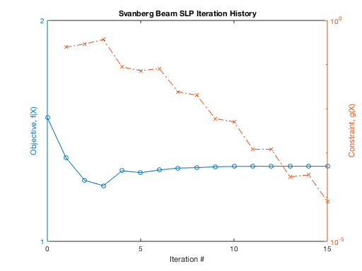

Regression_test script to run slp_trust and sqp examples
Contents
Log file
clear; clc; close all; format compact
if exist ('OCTAVE_VERSION','builtin')
MSGID = 'Octave:possible-matlab-short-circuit-operator';
warning('off',MSGID);
pkg load optim
addpath('examples:private:private/Octave')
delete regression_test_Octave.txt
diary regression_test_Octave.txt
else
delete regression_test.txt
diary regression_test.txt
end
disp(version)
disp(date)
Warning: File 'regression_test.txt' not found.
9.7.0.1296695 (R2019b) Update 4
07-Mar-2020
Run scripts
run2barFox
regression_check( xf, [1.87835663, 20.23690725], 'Fox2bar' );
Ricciardi_cs_test
runBarnes
runBeamGVslp
runHaftka4p2p1
runHaftka6p3p1slp
runRosenSuzuki
runSpringExampleTrust
runSvanbergSLP
xSvanberg = [
6.01858007
5.30292693
4.49935286
3.50102575
2.15179983];
regression_check( x, xSvanberg, 'Svanberg_SLP', 0.03 );
runSvanbergSQP
xSvanberg = [
6.01858007
5.30292693
4.49935286
3.50102575
2.15179983];
regression_check( x, xSvanberg, 'Svanberg_SQP', 0.06 );
tsuite
diary regression_test.txt
fprintf('\n\n\n----- tsuite -----\n\n\n')
type tsuite.log
diary off
Function gradient
Maximum discrepancy between derivatives = 3.55801e-08
Constraint gradients
Maximum discrepancy between derivatives = 3.95361e-08
Termination Criteria
1e-06 0.01 0.05
-------------------------------------
f-CNT FUNC STEP NAC max{g} j KTO max(S)
3 19.869 0 4 2.32 1 27.7 1.27
4 32.911 1 4 0.827 1 17.8 4.9
5 37.506 1 4 0.264 1 11.3 3.21
6 41.463 1 4 0.0475 1 2.54 0.811
7 42.648 1 4 0.00214 1 0.121 0.0388
8 42.709 1 4 4.68e-06 1 0.000265 8.45e-05
9 42.709 1 4 2.23e-11 1 7.27e-07 4.12e-09
Optimization Terminated Successfully from sqp
xf =
1.8784 20.2369
OPT =
Columns 1 through 7
2.0000 0.0500 0.0100 0.0000 0 0 0
Columns 8 through 14
42.7087 1.0000 9.0000 7.0000 9.0000 0 6.0000
Columns 15 through 18
20.0000 0.0000 0.1000 0
LAMBDA =
1.0e+03 *
0.0187
2.4041
0.0000
0
0
0.0000
Ricciardi Complex Step test
Function gradient
Maximum discrepancy between derivatives = 1.56985e-07
Constraint gradients
Maximum discrepancy between derivatives = 0
Termination Criteria
1e-06 0.0001 0.0001
-------------------------------------
f-CNT FUNC STEP NAC max{g} j KTO max(S)
3 -2.9278 0 2 -1.8e+308 1 15.8 0.6
7 -4.8474 0.475 2 -0.262 2- 6.6 0.786
11 -5.3768 0.256 2 -0.195 2- 0.661 0.203
15 -5.4238 0.133 2 -0.222 2- 0.018 0.022
18 -5.4315 1 2 -0.232 2- 0.000322 0.00308
21 -5.4317 1 2 -0.231 2- 2.92e-10 2.25e-06
Optimization Terminated Successfully from sqp
----- Barnes 2-DV, 3-constraint example -----
Termination Criteria
0.0001 0.001 0.01
-------------------------------------
f-CNT FUNC STEP NAC max{g} j KTO max(S)
1 -2.7447 0 5 -0.09 3 1.32 1.15
4 -4.1068 1 5 -0.0998 3 7.38 6.07
7 -12.089 1 5 -0.169 3 23.4 10.7
10 -24.276 1 5 0.0178 1 0.618 0.896
13 -24.605 1 5 0.0003 1 2.15 3.38
16 -26.495 1 5 0.0111 1 5.17 10.8
19 -31.137 1 5 0.188 2 0.871 1.43
22 -31.249 1 5 0.000694 2 0.648 2.16
25 -31.65 1 5 0.00745 2 0.0284 0.411
28 -31.638 1 5 0.00027 2 0.00177 0.0404
31 -31.637 1 5 2.61e-06 2 1.9e-05 0.000884
Optimization Terminated Successfully from sqp
fval: -31.6368
funcCount: 31
gradCount: 11
iterations: 10
options: [1×18 double]
status: []
SLP filter
Sequential Linear Programming (SLP) Iteration History
Iteration Objective MaxConstraint Index Step-size Merit MoveLimit TrustRatio
0 -2.7447 -0.09 3 0 -2.745
1 -7.5508 -0.1344 3 4 -7.551 0.1 1.036 f *
2 -15.927 -0.207 3 6 -15.93 0.15 1.02 f *
3 -26.395 -0.1475 1 9 -26.4 0.225 0.8443 f *
4 -29.786 0.05164 2 5.819 -26.4 0.3375 0.4617 m +
5 -22.482 -0.1837 3 13.5 -22.48 0.3375 -0.8537 f -
6 -31.212 0.004467 2 6.75 -22.48 0.1688 0.826 m +
7 -31.436 0.04101 2 5.062 48.69 0.1688 -8.179 g +
8 -31.67 0.01025 2 2.531 -11.64 0.08438 0.3605 f +
9 -31.38 0.01025 2 2.531 -11.64 0.08438 -8.341 f - Rejected
10 -31.594 0.002563 2 1.266 -26.59 0.04219 0.75 g +
11 -31.641 0.002563 2 1.266 -26.59 0.04219 -1.27e-07 g +
12 -31.634 0.0006407 2 0.6328 -30.37 0.02109 -0.5717 f +
13 -31.637 0.0001602 2 0.3164 -31.32 0.01055 0.4103 f +
14 -31.632 0.0001602 2 0.3164 -31.32 0.01055 4.077e-06 g - Rejected
15 -31.636 4.005e-05 2 0.1582 -31.56 0.005273 0.75 g +
16 -31.637 4.005e-05 2 0.1582 -31.56 0.005273 -2.218e-11 g + Bound
---------- ------------ ----------
Criteria 0.001 0.0001 0.01
SLP converged. Final objective function value = -31.6369
Lagrangian gradient 2-norm = 0.0009876
Lagrangian gradient inf-norm = 0.00077397
Optimality Tolerance = 0.005
Trust Region Strategy uses filter
* Dominates prior points
+ Nondominated
- Dominated by prior point(s)
f/g/m Objective/Constraint/Merit governs Trust Ratio
rejected: [0 0 0 0 0 0 0 0 0 1 0 0 0 0 1 0 0]
iterations: 16
funcCount: 17
gradCount: 15
message: 1
Result vs. Previous final objective
-31.6369 -31.6367
Result vs. Previous max constraint
1.0e-04 *
0.4005 0.4005
Barnes_SLP
Max DV difference = 0.054989 > tolerance = 0.0001
Result vs. Correct Answer for X
49.5377 49.5927
19.6317 19.6753
MPEA legacy
Sequential MPEA Optimization Iteration History
Iteration Objective MaxConstraint Index Step-size Merit MoveLimit TrustRatio
0 -2.7447 -0.09 3 0 -2.745
1 -7.5508 -0.1344 3 4 -7.551 0.1 1.036 f *
2 -15.927 -0.207 3 6 -15.93 0.15 0.9289 f *
3 -26.395 -0.1475 1 9 -26.4 0.225 0.8338 f *
4 -29.344 0.0614 1 5.713 -26.4 0.3375 0.383 m +
5 -21.803 -0.1838 3 13.5 -21.8 0.3375 -0.8613 f -
6 -30.311 -0.232 2 6.75 -30.31 0.1688 0.7064 f *
7 -30.934 4.441e-16 2 5.093 -30.93 0.1688 0.2206 m +
8 -31.502 8.882e-16 2 5.062 -31.5 0.1688 0.2642 m +
9 -30.934 4.441e-16 2 5.062 -30.93 0.1688 -0.6836 m -
10 -31.583 8.882e-16 2 2.531 -31.58 0.08438 0.6204 f +
11 -31.502 8.882e-16 2 2.531 -31.58 0.08438 -0.2834 f - Rejected
12 -31.632 1.776e-15 2 1.266 -31.63 0.04219 0.345 m +
13 -31.583 1.776e-15 2 1.266 -31.63 0.04219 -1.193 f - Rejected
14 -31.63 1.776e-15 2 0.6328 -31.63 0.02109 -0.08548 f - Rejected
15 -31.637 1.332e-15 2 0.3164 -31.64 0.01055 0.4601 f + Bound
---------- ------------ ----------
Criteria 0.001 0.0001 0.01
MPEA converged. Final objective function value = -31.6368
Lagrangian gradient 2-norm = 0.0021597
Lagrangian gradient inf-norm = 0.001693
Optimality Tolerance = 0.005
Trust Region Strategy uses filter
* Dominates prior points
+ Nondominated
- Dominated by prior point(s)
f/g/m Objective/Constraint/Merit governs Trust Ratio
rejected: [0 0 0 0 0 0 0 0 0 0 0 1 0 1 1 0]
iterations: 15
funcCount: 16
gradCount: 13
message: 1
Result vs. Previous final objective
-31.6368 -31.6357
Result vs. Previous max constraint
1.0e-04 *
0.0000 -0.1176
Barnes_MPEA_legacy
Max DV difference = 0.11028 > tolerance = 0.0001
Result vs. Correct Answer for X
49.5019 49.3916
19.6035 19.5163
MPEA filter
Sequential MPEA Optimization Iteration History
Iteration Objective MaxConstraint Index Step-size Merit MoveLimit TrustRatio
0 -2.7447 -0.09 3 0 -2.745
1 -7.5508 -0.1344 3 4 -7.551 0.1 1.036 f *
2 -15.927 -0.207 3 6 -15.93 0.15 1.02 f *
3 -26.395 -0.1475 1 9 -26.4 0.225 0.8443 f *
4 -26.942 0.6129 2 9.286 -19.24 0.3375 -1.399 m +
5 -31.511 -2.467e-12 2 6.75 -31.51 0.1688 0.429 f *
6 -31.183 0.04101 2 5.062 -31.51 0.1688 -0.6302 m - Rejected
7 -31.621 0.01025 2 2.531 -31.51 0.08438 0.1304 m +
8 -31.683 0.014 2 1.266 -31.51 0.04219 -0.3659 g +
9 -31.63 0.0006407 2 0.6328 -31.62 0.02109 0.9542 g +
10 -31.648 0.003883 2 0.6328 -31.6 0.02109 -5.06 g +
11 -31.637 0.0001602 2 0.3164 -31.63 0.01055 0.9587 g +
12 -31.637 0.0009368 2 0.3164 -31.63 0.01055 -4.849 g +
13 -31.637 4.004e-05 2 0.1582 -31.64 0.005273 -0.7886 f + Bound
---------- ------------ ----------
Criteria 0.001 0.0001 0.01
MPEA converged. Final objective function value = -31.6367
Lagrangian gradient 2-norm = 0.0054513
Lagrangian gradient inf-norm = 0.0042745
Optimality Tolerance = 0.005
Trust Region Strategy uses filter
* Dominates prior points
+ Nondominated
- Dominated by prior point(s)
f/g/m Objective/Constraint/Merit governs Trust Ratio
rejected: [0 0 0 0 0 0 1 0 0 0 0 0 0 0]
iterations: 13
funcCount: 14
gradCount: 13
message: 1
Result vs. Previous final objective
-31.6367 -31.6357
Result vs. Previous max constraint
1.0e-04 *
0.4004 -0.1176
Barnes_MPEA
Max DV difference = 0.073379 > tolerance = 0.0001
Result vs. Correct Answer for X
49.4650 49.3916
19.5741 19.5163
QMA filter
Sequential QMA Optimization Iteration History
Iteration Objective MaxConstraint Index Step-size Merit MoveLimit TrustRatio
0 -2.7447 -0.09 3 0 -2.745
1 -7.5508 -0.1344 3 4 -7.551 0.1 1.036 f *
qmeaprog not solved (no better than LPP)
2 -15.927 -0.207 3 6 -15.93 0.15 1.02 f *
3 -26.041 -0.09953 1 9 -26.04 0.225 0.8294 f *
4 -27.763 0.0084 1 3.018 -26.04 0.3375 0.7911 m +
5 -27.717 -5.479e-05 1 0.1749 -27.72 0.3375 0.7665 f +
6 -28.179 -0.0006309 1 1.186 -28.18 0.3375 1.959 f *
qmeaprog not solved (no better than LPP)
7 -31.188 0.0729 2 6.75 -28.18 0.3375 1.124 m +
8 -31.1 -0.1062 2 1.391 -31.1 0.3375 -0.8121 f +
9 -31.633 -0.001021 2 2.456 -31.63 0.1688 0.9856 f *
10 -31.637 1.076e-05 2 0.08199 -31.64 0.1688 0.898 m + Unbound
---------- ------------ ----------
Criteria 0.001 0.0001 0.01
QMA converged. Final objective function value = -31.6368
Lagrangian gradient 2-norm = 4.3491e-05
Lagrangian gradient inf-norm = 3.4086e-05
Optimality Tolerance = 0.005
Trust Region Strategy uses filter
* Dominates prior points
+ Nondominated
- Dominated by prior point(s)
f/g/m Objective/Constraint/Merit governs Trust Ratio
rejected: [0 0 0 0 0 0 0 0 0 0 0]
RadiusFraction: [1 1 0.6667 1 1 1 1 1 1 1]
iterations: 10
funcCount: 11
gradCount: 11
message: 1
QMEA filter
Sequential QMEA Optimization Iteration History
Iteration Objective MaxConstraint Index Step-size Merit MoveLimit TrustRatio
0 -2.7447 -0.09 3 0 -2.745
1 -7.5508 -0.1344 3 4 -7.551 0.1 1.036 f *
qmeaprog not solved (no better than LPP)
2 -15.927 -0.207 3 6 -15.93 0.15 1.02 f *
3 -26.041 -0.09953 1 9 -26.04 0.225 0.8294 f *
4 -27.769 0.003503 1 2.955 -26.04 0.3375 0.8578 m +
5 -27.799 -8.143e-06 1 0.1061 -27.8 0.3375 -23.64 f *
6 -29.118 -0.02858 1 3.375 -29.12 0.1688 1.323 f *
7 -30.721 0.01822 2 3.375 -29.12 0.1688 0.9954 m +
8 -31.671 0.01822 2 3.375 -30.07 0.1688 2.064e-11 g +
9 -31.634 -0.000155 2 0.4303 -31.63 0.08438 0.7997 f +
10 -31.637 -4.036e-08 2 0.1854 -31.64 0.08438 1.089 f + Unbound
---------- ------------ ----------
Criteria 0.001 0.0001 0.01
QMEA converged. Final objective function value = -31.6368
Lagrangian gradient 2-norm = 0.0020811
Lagrangian gradient inf-norm = 0.0016314
Optimality Tolerance = 0.005
Trust Region Strategy uses filter
* Dominates prior points
+ Nondominated
- Dominated by prior point(s)
f/g/m Objective/Constraint/Merit governs Trust Ratio
rejected: [0 0 0 0 0 0 0 0 0 0 0]
RadiusFraction: [1 1 0.6667 1 1 1 1 1 1 1]
iterations: 10
funcCount: 11
gradCount: 11
message: 1
QMEA - legacy - filter
Sequential QMEA Optimization Iteration History
Iteration Objective MaxConstraint Index Step-size Merit MoveLimit TrustRatio
0 -2.7447 -0.09 3 0 -2.745
1 -7.5508 -0.1344 3 4 -7.551 0.1 1.036 f *
No significant improvement found in line search.
f,gapx= -15.765 -0.1926 3 sqp failed in qmeaprog
2 -15.927 -0.207 3 6 -15.93 0.15 1.02 f *
3 -26.041 -0.09953 1 9 -26.04 0.225 0.8294 f *
4 -27.763 0.0084 1 3.018 -26.04 0.3375 0.7911 m +
5 -27.717 -5.484e-05 1 0.1748 -27.72 0.3375 0.7662 f +
6 -28.18 -0.0006302 1 1.187 -28.18 0.3375 1.959 f *
7 -31.189 0.0729 2 6.75 -28.18 0.3375 1.124 m +
8 -31.1 -0.1064 2 1.393 -31.1 0.3375 -0.8092 f +
9 -31.633 -0.001023 2 2.455 -31.63 0.1688 0.9854 f *
10 -31.637 1.106e-05 2 0.08315 -31.64 0.1688 0.8957 m + Unbound
---------- ------------ ----------
Criteria 0.001 0.0001 0.01
QMEA converged. Final objective function value = -31.6369
Lagrangian gradient 2-norm = 3.8228e-05
Lagrangian gradient inf-norm = 2.9962e-05
Optimality Tolerance = 0.005
Trust Region Strategy uses filter
* Dominates prior points
+ Nondominated
- Dominated by prior point(s)
f/g/m Objective/Constraint/Merit governs Trust Ratio
rejected: [0 0 0 0 0 0 0 0 0 0 0]
RadiusFraction: [1 1 0.6667 1 1 1 1 1 1 1]
iterations: 10
funcCount: 11
gradCount: 11
message: 1
Termination Criteria
0.0001 0.001 0.01
-------------------------------------
f-CNT FUNC STEP NAC max{g} j KTO max(S)
1 -11.092 0 5 0.714 1 501 20.3
4 -16.672 1 5 -0.22 3 4.31 3.27
7 -20.017 1 5 -0.0145 1 0.955 0.7
10 -20.798 1 5 0.000343 1 3.17 2.84
13 -23.639 1 5 0.0106 1 7.35 9.99
16 -28.285 1 5 0.103 1 2.93 5.05
19 -30.7 1 5 0.0409 2 0.936 1.58
22 -31.29 1 5 0.00398 2 0.645 2.21
25 -31.659 1 5 0.00782 2 0.0458 0.252
28 -31.637 1 5 0.000101 2 0.000649 0.0275
31 -31.637 1 5 1.21e-06 2 8.87e-06 0.000517
Optimization Terminated Successfully from sqp
fval: -31.6368
funcCount: 31
gradCount: 11
iterations: 10
options: [1×18 double]
status: []
SLP filter
Sequential Linear Programming (SLP) Iteration History
Iteration Objective MaxConstraint Index Step-size Merit MoveLimit TrustRatio
0 -11.092 0.7143 1 0 22.9
1 -12.382 0.669 1 1.067 19.45 0.1 0.8843 f * slack_LP
2 -13.557 0.5893 1 1.933 14.48 0.15 0.7303 f * slack_LP
3 -13.897 0.5 1 2 9.897 0.15 0.4672 f * slack_LP
4 -13.548 0.4022 1 2 5.589 0.15 1.046 g + slack_LP
5 -12.006 0.2393 1 3 -0.6182 0.225 1.063 g +
6 -9.128 -0.018 1 3.733 -9.128 0.3375 1.075 g +
7 -16.202 -0.09361 1 5.062 -16.2 0.5063 0.9387 f *
8 -24.464 -0.08498 1 7.594 -24.46 0.7594 0.8416 f *
9 -29.206 0.1478 2 9.612 -22.77 1.139 -0.2144 m +
10 -31.552 -0.02194 2 5.695 -31.55 0.5695 0.4451 f *
11 -30.52 0.0519 2 5.695 -31.55 0.5695 -5.401 m - Rejected
12 -31.384 0.01297 2 2.848 -31.55 0.2848 -1.569 m - Rejected
13 -31.596 0.003244 2 1.424 -31.55 0.1424 0.1643 m +
14 -31.636 0.0008109 2 0.7119 -31.62 0.07119 0.6265 f +
15 -31.629 0.0008109 2 0.7119 -31.62 0.07119 -0.3829 f - Rejected
16 -31.637 0.0002027 2 0.356 -31.63 0.0356 0.1903 f +
17 -31.633 0.0002027 2 0.356 -31.63 0.0356 -1.449 f - Rejected
18 -31.636 5.068e-05 2 0.178 -31.64 0.0178 -0.7184 f +
19 -31.637 1.267e-05 2 0.08899 -31.64 0.008899 0.4859 f + Bound
---------- ------------ ----------
Criteria 0.001 0.0001 0.01
SLP converged. Final objective function value = -31.6369
Lagrangian gradient 2-norm = 0.00061507
Lagrangian gradient inf-norm = 0.00048204
Optimality Tolerance = 0.005
Trust Region Strategy uses filter
* Dominates prior points
+ Nondominated
- Dominated by prior point(s)
f/g/m Objective/Constraint/Merit governs Trust Ratio
rejected: [0 0 0 0 0 0 0 0 0 0 0 1 1 0 0 1 0 1 0 0]
RadiusFraction: [0.6667 1 1 1 1 0.6667 1 1 1 1 1 1 1 1 1 1 1 1 1]
iterations: 19
funcCount: 20
gradCount: 16
message: 1
MPEA legacy
Sequential MPEA Optimization Iteration History
Iteration Objective MaxConstraint Index Step-size Merit MoveLimit TrustRatio
0 -11.092 0.7143 1 0 22.9
1 -12.382 0.669 1 1.067 19.45 0.1 0.8843 f * slack_LP
2 -13.631 0.5918 1 1.79 14.53 0.15 0.7759 f * slack_LP
3 -14.733 0.4762 1 2.25 7.929 0.225 0.6958 f * slack_LP
4 -14.856 0.3478 1 2.25 1.693 0.225 0.229 f * slack_LP
5 -14.177 0.2064 1 2.25 -4.353 0.225 0.9999 g + slack_LP
6 -13.179 0.000502 1 3.375 -13.16 0.3375 0.9976 g +
7 -18.059 -0.1045 1 5.062 -18.06 0.5063 0.7118 g *
8 -22.115 -0.1661 1 5.062 -22.11 0.5063 0.8556 f *
9 -27.294 -0.1771 1 7.594 -27.29 0.7594 0.8074 f *
10 -30.071 -0.03141 1 4.094 -30.07 1.139 0.6752 f *
11 -30.622 -0.01728 2 9.398 -30.62 1.139 0.1088 f *
12 -30.588 -8.882e-16 2 8.366 -30.62 1.139 -0.009702 f - Rejected
13 -31.636 4.441e-16 2 3.982 -31.64 0.5695 0.5633 m +
14 -30.555 4.441e-16 2 4.45 -31.64 0.5695 -21.83 f - Rejected
15 -31.393 4.441e-16 2 2.173 -31.64 0.2848 -9.832 f - Rejected
16 -31.583 8.882e-16 2 1.074 -31.64 0.1424 -4.27 m - Rejected
17 -31.626 -4.441e-16 2 0.5342 -31.63 0.07119 -1.599 f -
18 -31.635 -4.441e-16 2 0.2678 -31.64 0.0356 0.6866 f -
19 -31.636 4.441e-16 2 0.2664 -31.64 0.0356 0.1825 m -
20 -31.635 0 2 0.2664 -31.64 0.0356 -0.2901 f -
21 -31.637 8.882e-16 2 0.1334 -31.64 0.0178 0.5898 m + Bound
---------- ------------ ----------
Criteria 0.001 0.0001 0.01
MPEA converged. Final objective function value = -31.6368
Lagrangian gradient 2-norm = 0.0026223
Lagrangian gradient inf-norm = 0.0020558
Optimality Tolerance = 0.005
Trust Region Strategy uses filter
* Dominates prior points
+ Nondominated
- Dominated by prior point(s)
f/g/m Objective/Constraint/Merit governs Trust Ratio
rejected: [0 0 0 0 0 0 0 0 0 0 0 0 1 0 1 1 1 0 0 0 0 0]
RadiusFraction: [0.6667 0.6667 1 1 1 0.6667 1 1 1 1 1 1 1 1 1 1 1 1 1 1 1]
iterations: 21
funcCount: 22
gradCount: 18
message: 1
Result vs. Previous final objective
-31.6368 -31.6357
Result vs. Previous max constraint
1.0e-04 *
0.0000 -0.1176
Barnes_MPEA_legacy
Max DV difference = 0.10505 > tolerance = 0.1
Result vs. Correct Answer for X
49.4967 49.3916
19.5993 19.5163
MPEA filter
Sequential MPEA Optimization Iteration History
Iteration Objective MaxConstraint Index Step-size Merit MoveLimit TrustRatio
0 -11.092 0.7143 1 0 22.9
1 -12.382 0.669 1 1.067 19.45 0.1 0.8843 f * slack_LP
2 -13.522 0.5881 1 2 14.46 0.15 0.8196 f *
3 -13.742 0.4507 1 3 7.706 0.225 0.2408 f * slack_LP
4 -12.562 0.2941 1 3 1.433 0.225 0.9442 f +
5 -10.909 0.06663 1 3.375 -7.738 0.3375 1.044 g + slack_LP
6 -16.239 -0.05626 1 5.062 -16.24 0.5063 1.035 f *
7 -22.511 -0.1592 1 7.594 -22.51 0.7594 0.9569 f *
8 -29.953 -0.1306 1 11.39 -29.95 1.139 1.096 f *
9 -30.913 0.4612 2 14.82 -27.45 1.5 -0.3856 m +
10 -31.535 -3.642e-14 2 8.364 -31.53 0.75 0.3985 f *
11 -31.188 0.311 2 5.063 -31.53 0.75 -3.957 m - Rejected
12 -31.753 0.08569 2 2.652 -31.11 0.375 -1.065 m +
13 -31.634 1.926e-05 2 1.266 -31.63 0.1875 -3.105 f +
14 -31.622 0.001029 2 0.8021 -31.63 0.09375 -52.44 g - Rejected
15 -31.636 0.0002573 2 0.401 -31.63 0.04688 -12.36 g +
16 -31.638 0.0003527 2 0.1987 -31.63 0.02344 -0.371 g +
17 -31.637 1.526e-05 2 0.09764 -31.64 0.01172 0.9568 g +
18 -31.637 0.0001109 2 0.09917 -31.64 0.01172 -6.267 g +
19 -31.637 3.879e-06 2 0.04924 -31.64 0.005859 0.965 g + Bound
---------- ------------ ----------
Criteria 0.001 0.0001 0.01
MPEA converged. Final objective function value = -31.6368
Lagrangian gradient 2-norm = 0.0021037
Lagrangian gradient inf-norm = 0.0016485
Optimality Tolerance = 0.005
Trust Region Strategy uses filter
* Dominates prior points
+ Nondominated
- Dominated by prior point(s)
f/g/m Objective/Constraint/Merit governs Trust Ratio
rejected: [0 0 0 0 0 0 0 0 0 0 0 1 0 0 1 0 0 0 0 0]
RadiusFraction: [0.6667 1 1 0.6667 0.6667 1 1 1 1 1 1 1 1 1 1 1 1 1 1]
iterations: 19
funcCount: 20
gradCount: 18
message: 1
Result vs. Previous final objective
-31.6368 -31.6357
Result vs. Previous max constraint
1.0e-04 *
0.0388 -0.1176
Barnes_MPEA
Max DV difference = 0.15851 > tolerance = 0.1
Result vs. Correct Answer for X
49.5501 49.3916
19.6417 19.5163
QMA filter
Sequential QMA Optimization Iteration History
Iteration Objective MaxConstraint Index Step-size Merit MoveLimit TrustRatio
0 -11.092 0.7143 1 0 22.9
1 -12.382 0.669 1 1.067 19.45 0.1 0.8843 f * slack_LP
2 -13.557 0.5893 1 1.933 14.48 0.15 0.7303 f * slack_LP
3 -13.897 0.5 1 2 9.897 0.15 0.4672 f * slack_LP
4 -13.548 0.4022 1 2 5.589 0.15 1.046 g + slack_LP
Maximum iterations exceeded. Increase opts(15).
f,gapx= -11.848 0.2489 1 sqp failed in qmeaprog
5 -12.006 0.2393 1 3 -0.6182 0.225 0.9071 f +
6 -8.495 -0.01856 1 4.162 -8.495 0.3375 0.9063 f +
7 -8.7638 -8.366e-05 1 0.2794 -8.764 0.3375 1.004 f +
8 -8.7671 -2.876e-10 1 0.002726 -8.767 0.3375 1.472 f +
qmeaprog not solved (no better than LPP)
9 -15.502 -0.008823 1 4.5 -15.5 0.3375 0.9673 f *
10 -18.083 0.0004411 1 1.892 -15.5 0.5063 0.9449 m +
11 -17.999 -5.029e-07 1 0.06431 -18 0.5063 1 f +
12 -19.306 0.001295 1 0.9915 -11.73 0.5063 -9.335 m +
Maximum iterations exceeded. Increase opts(15).
f,gapx= -20.256 7.353e-09 1 sqp failed in qmeaprog
13 -19.521 -0.006038 1 0.3255 -19.52 0.2531 0.2263 f *
14 -22.416 0.0002232 1 2.531 -19.52 0.2531 0.5431 m +
15 -23.618 -0.001138 1 1.478 -23.62 0.2531 1.466 f *
16 -25.28 -0.000358 1 2.531 -25.28 0.2531 1.027 f *
17 -27.156 0.01313 1 3.797 143.2 0.3797 -94.06 m +
18 -27.844 -0.0006992 1 1.898 -27.84 0.1898 1.053 g *
19 -28.59 -0.00027 1 1.898 -28.59 0.1898 1.046 f *
qmeaprog not solved (no better than LPP)
20 -29.772 0.004896 1 2.848 33.72 0.2848 -55.12 m +
qmeaprog not solved (no better than LPP)
21 -30.457 -0.08188 1 1.424 -30.46 0.1424 0.9019 f *
22 -31.109 0.003244 2 1.424 -30.46 0.1424 0.9895 m +
23 -31.412 -0.002339 2 1.084 -31.41 0.1424 0.864 f *
24 -31.618 -0.0006799 2 1.424 -31.62 0.2136 1.017 f *
25 -31.639 0.0005117 2 0.5655 -31.54 0.3204 -4.226 m +
26 -31.637 -5.877e-06 2 0.02619 -31.64 0.1602 0.9964 f + Unbound
---------- ------------ ----------
Criteria 0.001 0.0001 0.01
QMA converged. Final objective function value = -31.6368
Lagrangian gradient 2-norm = 0.00017644
Lagrangian gradient inf-norm = 0.00013829
Optimality Tolerance = 0.005
Trust Region Strategy uses filter
* Dominates prior points
+ Nondominated
- Dominated by prior point(s)
f/g/m Objective/Constraint/Merit governs Trust Ratio
rejected: [0 0 0 0 0 0 0 0 0 0 0 0 0 0 0 0 0 0 0 0 0 0 0 0 0 0 0]
RadiusFraction: [1×26 double]
iterations: 26
funcCount: 27
gradCount: 27
message: 1
QMEA filter
Sequential QMEA Optimization Iteration History
Iteration Objective MaxConstraint Index Step-size Merit MoveLimit TrustRatio
0 -11.092 0.7143 1 0 22.9
1 -12.382 0.669 1 1.067 19.45 0.1 0.8843 f * slack_LP
qmeaprog not solved (no better than LPP)
2 -13.522 0.5881 1 2 14.46 0.15 0.8196 f *
3 -13.742 0.4507 1 3 7.706 0.225 0.2408 f * slack_LP
qmeaprog not solved (no better than LPP)
4 -12.562 0.2941 1 3 1.433 0.225 0.9442 f +
5 -10.909 0.06663 1 3.375 -7.738 0.3375 1.044 g + slack_LP
6 -16.239 -0.05626 1 5.062 -16.24 0.5063 0.8089 g *
7 -22.511 -0.1592 1 7.594 -22.51 0.7594 0.9816 f *
qmeaprog not solved (no better than LPP)
8 -28.45 -0.034 1 7.594 -28.45 1.139 0.9194 f *
9 -29.694 0.003656 1 2.821 -28.45 1.5 1.066 m +
10 -26.99 -0.2273 3 11.39 -26.99 1.5 -0.4463 f -
11 -29.868 -0.3379 3 5.695 -29.87 0.75 0.8904 f *
12 -31.605 0.0002241 2 2.419 -29.87 0.75 0.9555 m +
13 -31.638 0.0003578 2 0.7886 -28.86 0.75 -0.597 g +
14 -31.637 2.941e-08 2 0.02844 -31.64 0.375 0.9973 f + Unbound
---------- ------------ ----------
Criteria 0.001 0.0001 0.01
QMEA converged. Final objective function value = -31.6368
Lagrangian gradient 2-norm = 0.00011893
Lagrangian gradient inf-norm = 9.3208e-05
Optimality Tolerance = 0.005
Trust Region Strategy uses filter
* Dominates prior points
+ Nondominated
- Dominated by prior point(s)
f/g/m Objective/Constraint/Merit governs Trust Ratio
rejected: [0 0 0 0 0 0 0 0 0 0 0 0 0 0 0]
RadiusFraction: [0.6667 1 1 0.6667 0.6667 1 0.6667 1 1 1 1 1 1 1]
iterations: 14
funcCount: 15
gradCount: 15
message: 1
QMEA - legacy - filter
Sequential QMEA Optimization Iteration History
Iteration Objective MaxConstraint Index Step-size Merit MoveLimit TrustRatio
0 -11.092 0.7143 1 0 22.9
1 -12.382 0.669 1 1.067 19.45 0.1 0.8843 f * slack_LP
2 -13.631 0.5918 1 1.79 14.53 0.15 0.7759 f * slack_LP
3 -14.733 0.4762 1 2.25 7.929 0.225 0.6958 f * slack_LP
4 -14.856 0.3478 1 2.25 1.693 0.225 0.229 f * slack_LP
5 -14.177 0.2064 1 2.25 -4.353 0.225 0.9999 g + slack_LP
6 -12.195 -0.01255 1 3.144 -12.2 0.3375 0.9196 f +
7 -12.327 -3.687e-05 1 0.1704 -12.33 0.3375 1.002 f +
8 -12.33 1.894e-09 1 0.002063 -12.33 0.3375 1.756 m +
9 -16.956 -0.04215 1 3.375 -16.96 0.3375 0.9644 f *
10 -20.954 -0.05534 1 3.375 -20.95 0.5063 0.9857 f *
11 -25.508 -0.02091 1 5.062 -25.51 0.7594 0.9672 f *
12 -26.522 0.003171 1 1.58 -25.51 1.139 0.8404 m +
13 -26.414 9.405e-09 1 0.1863 -26.41 1.139 1 g +
14 -26.415 -1.607e-05 1 0.003915 -26.42 1.139 1.489 m +
15 -28.495 0.02042 1 5.062 -21.97 1.139 -2.931 m +
Augmented Search direction failed after 3 tries.
f,gapx= -27.5 0.005068 1 sqp failed in qmeaprog
16 -27.506 0.005101 1 2.531 -16.27 0.5695 0.994 f +
17 -26.534 4.179e-05 1 2.27 -26.44 0.5695 0.9918 g +
18 -26.585 -1.724e-07 1 0.1157 -26.59 0.5695 1.004 g +
19 -26.819 -0.0005468 1 0.5442 -26.82 0.5695 1.012 f +
20 -27.535 0.0008156 1 1.728 -25.74 0.5695 -1.507 m +
21 -27.359 -1.348e-05 1 0.4316 -27.36 0.2848 0.9592 f +
22 -27.764 -0.0007447 1 1.029 -27.76 0.2848 1.333 f +
qmeaprog not solved (no better than LPP)
23 -28.262 -1.344e-06 1 1.266 -28.26 0.2848 1.009 f +
24 -28.265 -1.348e-05 1 0.009938 -28.27 0.4271 1 f +
25 -29.022 -0.000359 1 1.898 -29.02 0.4271 1.026 f *
26 -29.154 -4.14e-07 1 0.3194 -29.15 0.6407 1.006 f *
27 -29.176 -7.048e-05 1 0.05231 -29.18 0.6407 1.001 f *
qmeaprog not solved (no better than LPP)
28 -30.099 -0.1762 1 2.848 -30.1 0.6407 0.7884 f *
29 -30.614 -0.2558 2 4.271 -30.61 0.9611 0.4257 f *
30 -31.468 0.004026 2 2.531 -30.61 0.9611 0.654 m +
31 -31.587 0.0006663 2 0.8092 -31.45 0.9611 0.8345 g +
32 -31.627 -2.201e-06 2 0.5349 -31.63 0.9611 1.003 g *
33 -31.637 -1.087e-05 2 0.4205 -31.64 0.9611 1.051 f * Unbound
---------- ------------ ----------
Criteria 0.001 0.0001 0.01
QMEA converged. Final objective function value = -31.6368
Lagrangian gradient 2-norm = 0.00016245
Lagrangian gradient inf-norm = 0.00012733
Optimality Tolerance = 0.005
Trust Region Strategy uses filter
* Dominates prior points
+ Nondominated
- Dominated by prior point(s)
f/g/m Objective/Constraint/Merit governs Trust Ratio
rejected: [1×34 logical]
RadiusFraction: [1×33 double]
iterations: 33
funcCount: 34
gradCount: 34
message: 1
----- Barnes end -----
Sequential Linear Programming (SLP) Iteration History
Iteration Objective MaxConstraint Index Step-size Merit MoveLimit TrustRatio
0 1e+05 0.5625 11 0 1.406e+05
1 84865 0.328 11 8 1.104e+05 0.2 0.4168 g *
2 70954 0.2401 9 8 1.119e+05 0.2 0.2449 g *
3 63631 0.2567 10 8 1.584e+05 0.2 0.07852 g +
4 64958 0.0797 10 4 8.602e+04 0.1 0.6896 g +
5 64449 0.03887 11 4 7.705e+04 0.1 -0.1494 g +
6 64326 0.01176 11 2 6.499e+04 0.05 0.6773 f +
7 64023 0.01385 11 2 6.523e+04 0.05 -0.178 g +
8 64198 0.002848 11 1 6.433e+04 0.025 0.7944 g +
9 64179 0.002776 11 1 6.43e+04 0.025 0.0254 g +
10 64196 0.002825 11 1 6.43e+04 0.025 -9.95 f - Rejected
11 64227 0.0006981 11 0.5 6.426e+04 0.0125 0.7485 g +
Move limits contract < TolX
12 64234 0.0007318 11 0.5 6.426e+04 0.0125 -0.04836 g - Rejected
13 64241 0.0001874 11 0.25 6.425e+04 0.00625 0.7316 g +
Move limits contract < TolX
14 64242 0.000181 11 0.25 6.425e+04 0.00625 0.03385 g +
15 64244 4.679e-05 11 0.125 6.425e+04 0.003125 0.7416 g +
Move limits contract < TolX
16 64244 4.902e-05 11 0.125 6.425e+04 0.003125 -0.0478 g + Bound
---------- ------------ ----------
Criteria 0.5 0.0001 0.5
SLP slowed. Final objective function value = 64243.9683
Lagrangian gradient 2-norm = 6.4206
Lagrangian gradient inf-norm = 3.988
Optimality Tolerance = 1
Lagrange Multipliers (j)
67.37 9
575.3 10
3.172e+04 11
80.24 12
77.1 13
73.8 14
69.76 15
65.3 16
62.83 17
56.82 18
52.02 19
43.26 20
29.54 21
Lower Upper (i)
0.789 0 11
0 0.527 13
0 2.575 14
0 4.826 15
1.459 0 16
0 2.018 17
2.204 0 18
Trust Region Strategy uses filter
* Dominates prior points
+ Nondominated
- Dominated by prior point(s)
f/g/m Objective/Constraint/Merit governs Trust Ratio
Result vs. Previous final objective
1.0e+04 *
6.4244 6.4245
Result vs. Previous max constraint
1.0e-04 *
0.4902 0.0073
BeamGV_SLP
Max DV difference = 0.12125 > tolerance = 0.1
Result vs. Correct Answer for X
3.1954 3.1982
3.0779 3.0838
2.9635 2.9574
2.8225 2.8188
2.6664 2.6676
2.4922 2.4953
2.2994 2.2943
2.0525 2.0539
1.7498 1.7498
1.3888 1.3888
63.9078 63.9633
61.5579 61.6753
59.2695 59.1483
56.4504 56.3770
53.3278 53.3516
49.8448 49.9052
45.9879 45.8850
41.0500 41.0781
34.9951 34.9951
27.7757 27.7757
Sequential Linear Programming (SLP) Iteration History
Iteration Objective MaxConstraint Index Step-size Merit MoveLimit TrustRatio
0 1e+05 0.5625 11 0 3.721e+05
1 84865 0.328 11 8 2.165e+05 0.2 0.5405 *
2 70954 0.2401 9 8 1.995e+05 0.2 0.1179 *
3 69210 0.07143 10 4 1.131e+05 0.1 0.6639 *
4 65508 0.0427 10 4 9.032e+04 0.1 0.4819 *
5 63799 0.05956 10 4 9.032e+04 0.1 -0.4002 + Rejected
6 65099 0.01605 10 2 7.461e+04 0.05 0.6232 +
7 64215 0.01755 10 2 7.247e+04 0.05 0.2055 +
8 63999 0.0123 11 2 6.806e+04 0.05 0.5164 +
9 64007 0.012 11 2 6.806e+04 0.05 0.06012 + Rejected
10 64190 0.003297 11 1 6.495e+04 0.025 0.798 +
11 64210 0.003367 8 1 6.495e+04 0.025 -1.327 - Rejected
12 64241 0.0007907 11 0.5 6.459e+04 0.0125 0.5024 +
13 64231 0.0007362 11 0.5 6.44e+04 0.0125 0.525 +
Move limits contract < TolX
14 64229 0.0007397 11 0.5 6.44e+04 0.0125 0.006497 + Rejected
15 64240 0.0001799 11 0.25 6.428e+04 0.00625 0.736 +
Move limits contract < TolX
16 64242 0.0001853 11 0.25 6.428e+04 0.00625 -0.07885 - Rejected
17 64244 4.713e-05 11 0.125 6.425e+04 0.003125 0.708 +
Move limits contract < TolX
18 64244 4.488e-05 11 0.125 6.425e+04 0.003125 0.04108 + Rejected
19 64245 1.128e-05 11 0.0625 6.425e+04 0.001563 0.7389 +
Move limits contract < TolX
20 64245 1.122e-05 11 0.0625 6.425e+04 0.001563 -0.008657 + Rejected
21 64245 2.797e-06 11 0.03125 6.425e+04 0.0007813 0.7283 +
Move limits contract < TolX
22 64245 2.929e-06 11 0.03125 6.425e+04 0.0007813 -0.05229 - Rejected
23 64245 7.31e-07 11 0.01562 6.425e+04 0.0003906 0.7152 + Bound
---------- ------------ ----------
Criteria 0.5 0.0001 0.5
SLP converged. Final objective function value = 64244.8328
Lagrangian gradient 2-norm = 1.2788
Lagrangian gradient inf-norm = 0.75809
Optimality Tolerance = 1
Lagrange Multipliers (j)
73.15 9
577.4 10
3.162e+04 11
79.97 12
77.43 13
73.91 14
70.56 15
66.67 16
62.31 17
57.05 18
51.46 19
43.22 20
29.52 21
Lower Upper (i)
1.253 0 12
0 0.01541 13
0.2795 0 14
0 0.01286 15
0 0.2131 16
0 1.145 17
0.3791 0 18
Trust Region Strategy uses simple Merit function
* Dominates prior points
+ Nondominated
- Dominated by prior point(s)
Sequential Linear Programming (SLP) Iteration History
Iteration Objective MaxConstraint Index Step-size Merit MoveLimit TrustRatio
0 1e+05 0.5625 11 0 1.406e+05
1 84865 0.328 11 8 1.104e+05 0.2 0.5347 *
2 70954 0.2401 9 8 1.119e+05 0.2 -0.03895 *
3 69210 0.07143 10 4 9.522e+04 0.1 0.3924 *
4 65508 0.0427 10 4 7.903e+04 0.1 0.5501 *
5 63799 0.05956 10 4 7.903e+04 0.1 -0.2938 + Rejected
6 65099 0.01605 10 2 7.075e+04 0.05 0.5945 +
7 64215 0.01755 10 2 7.075e+04 0.05 0.2115 +
8 63999 0.0123 11 2 6.619e+04 0.05 0.6684 +
9 64007 0.012 11 2 6.49e+04 0.05 0.5729 +
10 63980 0.01189 11 2 6.452e+04 0.05 0.3848 +
11 64000 0.01192 11 2 6.452e+04 0.05 -0.6192 - Rejected
12 64160 0.003271 11 1 6.431e+04 0.025 0.5532 +
13 64217 0.003153 11 1 6.449e+04 0.025 -1.604 +
14 64234 0.0008716 11 0.5 6.427e+04 0.0125 0.826 +
Move limits contract < TolX
15 64228 0.0008717 9 0.5 6.427e+04 0.0125 -1.786 + Rejected
16 64244 0.0001978 11 0.25 6.425e+04 0.00625 0.6766 +
Move limits contract < TolX
17 64240 0.0001846 11 0.25 6.426e+04 0.00625 -0.8775 +
18 64244 4.681e-05 11 0.125 6.425e+04 0.003125 0.8852 +
Move limits contract < TolX
19 64244 4.541e-05 11 0.125 6.425e+04 0.003125 -0.06027 +
20 64245 1.135e-05 11 0.0625 6.425e+04 0.001563 0.6379 +
Move limits contract < TolX
21 64245 1.114e-05 11 0.0625 6.425e+04 0.001563 0.07676 +
22 64245 2.827e-06 11 0.03125 6.424e+04 0.0007813 0.5834 + Bound
---------- ------------ ----------
Criteria 0.5 0.0001 0.5
SLP converged. Final objective function value = 64244.7524
Lagrangian gradient 2-norm = 0.88931
Lagrangian gradient inf-norm = 0.58243
Optimality Tolerance = 1
Lagrange Multipliers (j)
71.92 9
577 10
3.164e+04 11
79.98 12
77.4 13
73.8 14
70.22 15
66.95 16
62.55 17
57.05 18
51 19
43.23 20
29.53 21
Lower Upper (i)
1.12 0 12
0 0.4289 13
0 0.9057 14
0.9395 0 15
0.5856 0 16
0 1.167 17
0 1.219 18
Trust Region Strategy uses Merit function
* Dominates prior points
+ Nondominated
- Dominated by prior point(s)
Sequential Linear Programming (SLP) Iteration History
Iteration Objective MaxConstraint Index Step-size Merit MoveLimit TrustRatio
0 1e+05 0.5625 11 0 1.406e+05
1 84865 0.328 11 8 1.104e+05 0.2 0.5347 *
2 70954 0.2401 9 8 1.119e+05 0.2 -0.03895 * _m
3 65347 0.2337 10 6 1.444e+05 0.15 -0.7055 * !
4 64056 0.09232 10 4.195 9.663e+04 0.1049 0.5955 *
5 63192 0.0594 11 4.195 7.848e+04 0.1049 0.5384 *
6 62960 0.05445 11 4.195 7.061e+04 0.1049 0.4968 *
7 63367 0.0606 11 4.195 7.061e+04 0.1049 0.2757 - _m Rejected
8 64384 0.003778 11 1.049 6.469e+04 0.02622 0.9482 + _m
9 64205 0.003596 11 1.049 6.488e+04 0.02622 -0.3852 + _m
10 64219 0.001824 11 0.7866 6.437e+04 0.01967 0.7651 + _m
Move limits contract < TolX
11 64210 0.001868 11 0.7866 6.437e+04 0.01967 0.0374 + _m
12 64238 0.0004563 11 0.386 6.428e+04 0.009651 0.6854 +
Move limits contract < TolX
13 64237 0.000458 11 0.386 6.428e+04 0.009651 0.03122 + _m
14 64244 0.0001073 11 0.1899 6.425e+04 0.004748 0.7039 +
Move limits contract < TolX
15 64243 0.0001052 11 0.1899 6.425e+04 0.004748 0.09682 + !
16 64244 3.345e-05 11 0.1051 6.425e+04 0.002629 0.6117 +
Move limits contract < TolX
17 64244 3.28e-05 11 0.1051 6.425e+04 0.002629 -0.04897 + !
18 64245 7.461e-06 11 0.05012 6.425e+04 0.001253 0.7213 + Bound
---------- ------------ ----------
Criteria 0.5 0.0001 0.5
SLP converged. Final objective function value = 64244.6269
Lagrangian gradient 2-norm = 1.4326
Lagrangian gradient inf-norm = 0.89629
Optimality Tolerance = 1
Lagrange Multipliers (j)
81.05 9
580.2 10
3.15e+04 11
80.89 12
76.7 13
73.68 14
71.43 15
66.63 16
62.27 17
58.2 18
51.92 19
43.16 20
29.5 21
Lower Upper (i)
3.338 0 11
0 1.052 12
0 0.6324 13
3.431 0 14
0 0.2093 16
2.942 0 17
2.051 0 18
Trust Region Strategy uses Merit function
* Dominates prior points
+ Nondominated
- Dominated by prior point(s)
! Trust Radius set by Merit function minimization
_ Trust Radius set by target Trust Ratio
f/g/m Objective/Constraint/Merit governs Trust Ratio
Sequential Linear Programming (SLP) Iteration History
Iteration Objective MaxConstraint Index Step-size Merit MoveLimit TrustRatio
0 1e+05 0.5625 11 0 1.406e+05
1 84865 0.328 11 8 1.104e+05 0.2 0.4168 g *
2 70954 0.2401 9 8 1.119e+05 0.2 0.2449 g *
3 63631 0.2567 10 8 1.584e+05 0.2 0.07852 g + !
4 63407 0.1647 10 5.471 1.089e+05 0.1368 0.3584 g *
5 62798 0.07606 11 5.471 7.615e+04 0.1368 0.1399 g * !
6 62620 0.07557 11 5.471 6.698e+04 0.1368 0.006403 g * !
7 62849 0.07462 11 5.471 7.123e+04 0.1368 -1.032 f + !
8 63588 0.02182 11 2.639 6.457e+04 0.06598 0.7076 g +
9 64205 0.01682 11 2.639 6.626e+04 0.06598 0.2289 g +
10 63644 0.02304 11 2.639 6.626e+04 0.06598 -0.3697 g - ! Rejected
11 64469 0.001559 11 0.6603 6.465e+04 0.01651 0.9073 g + !
12 64297 0.001439 11 0.6603 6.446e+04 0.01651 0.07708 g + _g
Move limits contract < TolX
13 64234 0.001462 11 0.6603 6.446e+04 0.01651 -0.01561 g + _g
14 64251 0.0002336 11 0.2734 6.429e+04 0.006834 0.8402 g + _g
Move limits contract < TolX
15 64243 0.0002363 11 0.2734 6.43e+04 0.006834 -0.01175 g + _g
16 64244 8.193e-05 11 0.1637 6.426e+04 0.004093 0.6533 g +
Move limits contract < TolX
17 64243 8.387e-05 11 0.1637 6.426e+04 0.004093 -0.02368 g + _g
18 64244 2.087e-05 11 0.08353 6.425e+04 0.002088 0.7511 g + _g
19 64244 2.026e-05 11 0.08353 6.425e+04 0.002088 0.02964 g + _g Bound
---------- ------------ ----------
Criteria 0.5 0.0001 0.5
SLP slowed. Final objective function value = 64244.4133
Lagrangian gradient 2-norm = 3.6719
Lagrangian gradient inf-norm = 1.916
Optimality Tolerance = 1
Lagrange Multipliers (j)
74.91 9
578 10
3.16e+04 11
79.96 12
77.66 13
73.84 14
70.05 15
67.1 16
63.11 17
57.25 18
50.8 19
43.21 20
29.52 21
Lower Upper (i)
2.094 0 12
0 0.2189 13
0 1.446 14
1.507 0 15
2.567 0 16
0 0.4221 17
0 1.872 18
Trust Region Strategy uses filter
* Dominates prior points
+ Nondominated
- Dominated by prior point(s)
! Trust Radius set by Merit function minimization
_ Trust Radius set by target Trust Ratio
f/g/m Objective/Constraint/Merit governs Trust Ratio
Haftka Example 4.2.1
x0 =
-1
-2
First-order
Iteration Func-count f(x) Step-size optimality
0 3 2 4
1 9 1.51923 0.0480769 2.62
2 15 1.14302 0.1 3.4
3 24 0.798154 0.0432764 1.85
4 30 0.533847 0.112452 2.61
5 39 0.331281 0.0432764 1.42
6 45 0.176032 0.112452 2
7 54 0.0570482 0.0432764 1.08
8 60 -0.0341418 0.112452 1.53
9 69 -0.104031 0.0432764 0.831
10 75 -0.157594 0.112452 1.17
11 84 -0.198645 0.0432764 0.637
12 90 -0.230107 0.112452 0.899
13 99 -0.25422 0.0432764 0.488
14 105 -0.2727 0.112452 0.689
15 114 -0.286864 0.0432764 0.374
16 120 -0.297719 0.112451 0.528
17 129 -0.306038 0.0432764 0.287
18 135 -0.312414 0.112451 0.405
19 144 -0.317301 0.0432764 0.22
First-order
Iteration Func-count f(x) Step-size optimality
20 150 -0.321046 0.112451 0.31
21 159 -0.323916 0.0432765 0.168
22 165 -0.326116 0.112451 0.238
23 174 -0.327802 0.0432765 0.129
24 180 -0.329094 0.112451 0.182
25 189 -0.330084 0.0432766 0.0989
26 195 -0.330843 0.11245 0.14
27 204 -0.331425 0.0432766 0.0758
28 210 -0.331871 0.11245 0.107
29 219 -0.332212 0.0432767 0.0581
30 225 -0.332474 0.112449 0.082
31 234 -0.332675 0.0432768 0.0445
32 240 -0.332829 0.112448 0.0629
33 249 -0.332947 0.0432769 0.0341
34 255 -0.333037 0.112447 0.0482
35 264 -0.333106 0.0432771 0.0262
36 270 -0.333159 0.112446 0.0369
37 279 -0.3332 0.0432774 0.0201
38 285 -0.333231 0.112444 0.0283
39 294 -0.333255 0.0432777 0.0154
First-order
Iteration Func-count f(x) Step-size optimality
40 300 -0.333273 0.112441 0.0217
41 309 -0.333287 0.0432782 0.0118
42 315 -0.333298 0.112438 0.0166
43 324 -0.333306 0.0432786 0.00903
44 330 -0.333313 0.112435 0.0127
45 339 -0.333317 0.043279 0.00692
46 345 -0.333321 0.112431 0.00976
47 354 -0.333324 0.0432798 0.0053
48 360 -0.333326 0.112426 0.00748
49 369 -0.333328 0.0432809 0.00407
50 375 -0.333329 0.112417 0.00574
51 384 -0.33333 0.0432825 0.00312
52 390 -0.333331 0.112405 0.0044
53 399 -0.333331 0.0432845 0.00239
54 405 -0.333332 0.112385 0.00337
55 414 -0.333332 0.0432873 0.00183
Local minimum possible.
fminunc stopped because the size of the current step is less than
the value of the step size tolerance.
x_SD =
-0.3339
-0.5010
outSD =
struct with fields:
iterations: 55
funcCount: 414
stepsize: 1.7122e-04
lssteplength: 0.0433
firstorderopt: 0.0018
algorithm: 'quasi-newton'
message: '↵Local minimum possible.↵↵fminunc stopped because the size of the current step is less than↵the value of the step size tolerance.↵↵<stopping criteria details>↵↵Optimization stopped because the norm of the current step, 9.716319e-05, is↵less than options.StepTolerance = 1.000000e-04.↵↵'
Sequential Linear Programming (SLP) Iteration History
Iteration Objective MaxConstraint Index Step-size Merit MoveLimit TrustRatio
0 2 -1 1 0 2
1 2.08 -1 1 0.4 2 0.2 -0.04 - Rejected
2 1.52 -1 1 0.2 1.52 0.1 0.48 *
3 1.04 -1 1 0.2 1.04 0.1 0.9231 *
4 0.32 -1 1 0.4 0.32 0.2 0.8182 *
5 7.52 -1 1 0.8 0.32 0.4 -6.429 - Rejected
6 1.84 -1 1 0.4 0.32 0.2 -2.714 - Rejected
7 0.56 -1 1 0.2 0.32 0.1 -0.8571 - Rejected
8 0.31 -1 1 0.1 0.31 0.05 0.07143 *
9 0.2325 -1 1 0.05 0.2325 0.025 0.9687 *
10 0.16 -1 1 0.05 0.16 0.025 0.9667 *
11 0.03 -1 1 0.1 0.03 0.05 0.9286 *
12 -0.17 -1 1 0.2 -0.17 0.1 0.8333 *
13 -0.33 -1 1 0.4 -0.33 0.2 0.5 *
14 1.59 -1 1 0.4 -0.33 0.2 -12 - Rejected
15 0.11 -1 1 0.2 -0.33 0.1 -5.5 - Rejected
16 -0.24 -1 1 0.1 -0.33 0.05 -2.25 - Rejected
17 -0.3175 -1 1 0.05 -0.33 0.025 -0.625 - Rejected
18 -0.33188 -1 1 0.025 -0.3319 0.0125 0.1875 *
19 -0.33297 -1 1 0.0125 -0.333 0.00625 0.35 *
20 -0.33188 -1 1 0.0125 -0.333 0.00625 -1.167 - Rejected
21 -0.33293 -1 1 0.00625 -0.333 0.003125 -0.08333 - Rejected
22 -0.33308 -1 1 0.003125 -0.3331 0.001563 0.4583 *
23 -0.33316 -1 1 0.003125 -0.3332 0.001563 0.9 *
24 -0.33328 -1 1 0.00625 -0.3333 0.003125 0.75 *
25 -0.33332 -1 1 0.00625 -0.3333 0.003125 0.5 *
26 -0.33297 -1 1 0.00625 -0.3333 0.003125 -2.25 - Rejected
27 -0.33327 -1 1 0.003125 -0.3333 0.001563 -0.625 - Rejected
28 -0.33333 -1 1 0.001563 -0.3333 0.0007813 0.1875 *
29 -0.33333 -1 1 0.0007812 -0.3333 0.0003906 0.35 *
30 -0.33333 -1 1 0.0007812 -0.3333 0.0003906 -1.167 - Rejected
31 -0.33333 -1 1 0.0003906 -0.3333 0.0001953 -0.08333 - Rejected
32 -0.33333 -1 1 0.0001953 -0.3333 9.766e-05 0.4583 *
33 -0.33333 -1 1 0.0001953 -0.3333 9.766e-05 0.9 *
34 -0.33333 -1 1 0.0003906 -0.3333 0.0001953 0.75 *
35 -0.33333 -1 1 0.0003906 -0.3333 0.0001953 0.5 *
36 -0.33333 -1 1 0.0003906 -0.3333 0.0001953 -2.25 - Rejected
Move limits contract < TolX
37 -0.33333 -1 1 0.0001953 -0.3333 9.766e-05 -0.625 - Rejected
Move limits contract < TolX
38 -0.33333 -1 1 9.766e-05 -0.3333 4.883e-05 0.1875 * Bound
---------- ------------ ----------
Criteria 0.0001 1e-06 0.0001
SLP converged. Final objective function value = -0.33333
Lagrangian gradient 2-norm = 0.00097656
Lagrangian gradient inf-norm = 0.00078125
Optimality Tolerance = 0.001
Trust Region Strategy uses Merit function
* Dominates prior points
+ Nondominated
- Dominated by prior point(s)
x_SLP =
-0.3333
-0.5001
rejected: [1×39 logical]
iterations: 38
funcCount: 39
gradCount: 23
message: 1
For same # iterations, accounting for Steepest Descent using finite difference,
SLP used 265 fewer function evaluations
First-order
Iteration Func-count f(x) Step-size optimality
0 3 2 4
1 9 1.51923 0.0480769 2.62
2 15 -0.241374 10 0.583
3 18 -0.333333 1 2.98e-08
Local minimum found.
Optimization completed because the size of the gradient is less than
the value of the optimality tolerance.
x_BFGS =
-0.3333
-0.5000
Termination Criteria
1e-06 0.0001 0.0001
-------------------------------------
f-CNT FUNC STEP NAC max{g} j KTO max(S)
1 2 0 0 -1 1 20 4
4 1.5192 0.0481 0 -1 1 8.55 3.02
6 -0.33333 0.433 0 -1 1 8.26e-23 1.78e-12
Optimization Terminated Successfully from sqp
x_SQP =
-0.3333
-0.5000
function [f,g] = fHaftka4p2p1( x )
% Haftka Example 4.2.1 objective evaluation
f = 12*x(1)^2 + 4*x(2)^2 - 12*x(1)*x(2) + 2*x(1); % Eq.(4.2.18)
g = -1;
end
function [gradf,gradg] = gHaftka4p2p1( x )
% Haftka Example 4.2.1 objective gradient evaluation
gradf = [24*x(1) - 12*x(2) + 2;
8*x(2) - 12*x(1)];
gradg = [0; 0];
end
Haftka Exercise 6.3.1
Sequential Linear Programming (SLP) Iteration History
Iteration Objective MaxConstraint Index Step-size Merit MoveLimit TrustRatio
0 -3 -7 2 0 -3
1 -4.5 -7 2 0.5 -4.5 0.5 1 *
2 -7.5 -7 2 1 -7.5 1 1 *
3 -11.95 4.105 1 1.95 -7.5 2 -0.3511 + Rejected
4 -10.5 -0.5 1 1 -10.5 1 1 +
5 -11.107 0.5026 1 0.5357 -10.5 1 0.2526 +
6 -11.001 0.002525 1 0.03556 -11 1 0.9945 +
7 -11 6.911e-08 1 0.0002101 -11 1 1 + Unbound
---------- ------------ ----------
Criteria 1e-06 0.001 0.01
SLP converged. Final objective function value = -11
Lagrangian gradient 2-norm = 0
Lagrangian gradient inf-norm = 0
Optimality Tolerance = 0.0001
Trust Region Strategy uses Merit function
* Dominates prior points
+ Nondominated
- Dominated by prior point(s)
xopt =
4.0000
3.0000
fval =
-11.0000
Sequential Linear Programming (SLP) Iteration History
Iteration Objective MaxConstraint Index Step-size Merit MoveLimit TrustRatio
0 -3 -7 2 0 -3
1 -4.5 -7 2 0.5 -4.5 0.5 1 * !
2 -10.5 -0.5004 1 2 -10.5 2 1 * !
3 -11.107 0.5026 1 0.5358 -10.5 1.018 0.2526 + R=0.5
4 -11.001 0.002525 1 0.03556 -11 1.018 0.9945 + _m
5 -11 6.892e-08 1 0.00021 -11 1.018 1 + _m Unbound
---------- ------------ ----------
Criteria 1e-06 0.001 0.01
SLP converged. Final objective function value = -11
Lagrangian gradient 2-norm = 1.1102e-16
Lagrangian gradient inf-norm = 1.1102e-16
Optimality Tolerance = 0.0001
Trust Region Strategy uses Merit function
* Dominates prior points
+ Nondominated
- Dominated by prior point(s)
! Trust Radius set by Merit function minimization
_ Trust Radius set by target Trust Ratio
f/g/m Objective/Constraint/Merit governs Trust Ratio
xopt2 =
4.0000
3.0000
fval2 =
-11.0000
function [f,g]=fHaftka6p3p1( x )
% Function evaluation for Example 6.3.1 taken from
% "Elements of Structural Optimization" by Haftka and Gurdal
% N.B., Haftka uses g>=0; whereas, Matlab uses g<=0.
%
%--Input
%
% x........ Design variable vector of length 2
%
%--Ouput
%
% f........ Objective function value (scalar) - linear in x
% g........ Constraint function values (vector)
f = [-2 -1]*x(:);
g = [(sum(x.^2)-25)
x(1)^2-x(2)^2-7];
function [gradf,gradg]=gHaftka6p3p1( x )
% Gradient evaluation for Example 6.3.1 taken from
% "Elements of Structural Optimization" by Haftka and Gurdal
% N.B., Haftka uses g>=0; whereas, Matlab uses g<=0.
%
%--Input
%
% x........ Design variable vector of length 2
%
%--Ouput
%
% gradf.... Gradient of objective function (column vector)
% gradg.... Gradients of constraints (#variables by #constraints matrix)
% i.e., a constraint gradient in each column
gradf = [-2; -1];
gradg = [2*x(:), [2; -2].*x(:)];
Rosen-Suzuki problem from Hock & Schittkowski test suite
SLP
Sequential Linear Programming (SLP) Iteration History
Iteration Objective MaxConstraint Index Step-size Merit MoveLimit TrustRatio
0 46 71 2 0 183.2
1 35.6 40.72 2 1 112.8 0.2 0.8783 *
2 30.799 17.48 2 1 62.01 0.2 0.8392 *
3 26.08 2.721 2 1 31.55 0.2 0.8065 *
4 5.1595 2.606 3 2 14.73 0.4 0.5098 *
5 0.16691 8.859 2 2 14.73 0.4 -0.3314 + Rejected
6 5.598 0.84 3 0.6 13.1 0.2 0.1577 +
7 6.2299 0.1621 1 0.2168 7.673 0.1 0.7674 +
8 5.4488 0.1983 3 0.3 7.673 0.1 0.1719 +
9 5.9543 0.04866 3 0.15 6.503 0.05 0.6598 +
10 5.9034 0.04364 3 0.15 6.386 0.05 0.1826 +
11 5.9866 0.01292 3 0.075 6.132 0.025 0.6136 +
12 5.9854 0.009984 3 0.05 6.098 0.025 0.2117 +
13 5.985 0.01172 1 0.075 6.098 0.025 -0.1231 + Rejected
14 5.9967 0.003058 1 0.0375 6.031 0.0125 0.6415 +
15 5.9934 0.002702 3 0.0375 6.023 0.0125 0.1932 +
16 5.999 0.0006728 3 0.01875 6.006 0.00625 0.6772 +
17 5.9991 0.0006769 3 0.01875 6.006 0.00625 -0.02991 - Rejected
18 5.9999 0.0001696 3 0.009375 6.002 0.003125 0.6965 +
19 5.9995 0.0001841 1 0.009375 6.002 0.003125 0.06371 +
20 5.9999 4.627e-05 1 0.004687 6 0.001563 0.6808 +
21 5.9999 4.585e-05 1 0.004687 6 0.001563 -0.1078 +
22 6 1.15e-05 1 0.002344 6 0.0007813 0.7193 +
23 6 1.148e-05 1 0.002344 6 0.0007813 -0.1207 +
24 6 2.866e-06 1 0.001172 6 0.0003906 0.7213 +
Move limits contract < TolX
25 6 2.868e-06 1 0.001172 6 0.0003906 -0.1109 - Rejected
26 6 7.164e-07 1 0.0005859 6 0.0001953 0.6842 + Bound
---------- ------------ ----------
Criteria 5e-05 1e-06 0.001
SLP converged. Final objective function value = 6
Lagrangian gradient 2-norm = 0.0024367
Lagrangian gradient inf-norm = 0.0014238
Optimality Tolerance = 0.05
Trust Region Strategy uses Merit function
* Dominates prior points
+ Nondominated
- Dominated by prior point(s)
xopt =
0.0002
1.0001
1.9999
-1.0002
fopt =
6.0000
fopt =
6.0000
gopt =
0.0000
-0.9996
0.0000
Schittkowski's SQP with complex step gradients
Function gradient
Maximum discrepancy between derivatives = 6.27802e-07
Constraint gradients
Maximum discrepancy between derivatives = 2.48221e-07
Termination Criteria
1e-06 5e-05 0.001
-------------------------------------
f-CNT FUNC STEP NAC max{g} j KTO max(S)
5 46 0 7 71 2 299 16.5
11 -7.4064 0.252 7 20.3 3 46.8 5.03
17 -13.395 0.371 7 14.3 3 18.9 2.44
22 -0.71871 1 7 8.55 1 20.9 2.14
27 -4.7231 1 7 5.85 2 17.4 0.862
32 3.3588 1 7 1.02 3 4.62 0.344
37 5.6499 1 7 0.228 3 0.788 0.245
43 5.6171 0.497 7 0.161 3 0.509 0.303
49 5.664 0.36 7 0.119 3 0.669 0.0252
54 5.9966 1 7 0.00129 1 0.00682 0.000879
59 6 1 7 1.83e-06 3 1.03e-05 0.00011
64 6 1 7 3.2e-08 3 1.82e-07 6.88e-07
Optimization Terminated Successfully from sqp
xopt =
-0.0000
1.0000
2.0000
-1.0000
fopt =
struct with fields:
fval: 6.0000
funcCount: 64
gradCount: 12
iterations: 11
options: [1×18 double]
status: []
fopt =
6.0000
gopt =
0.0000
-1.0000
0.0000
Schittkowski's SQP with fmincon problem structure
Termination Criteria
1e-06 5e-05 0.001
-------------------------------------
f-CNT FUNC STEP NAC max{g} j KTO max(S)
1 46 0 7 71 2 299 16.5
3 -7.4064 0.252 7 20.3 3 46.8 5.03
5 -13.395 0.371 7 14.3 3 18.9 2.44
6 -0.71871 1 7 8.55 1 20.9 2.14
7 -4.7231 1 7 5.85 2 17.4 0.862
8 3.3588 1 7 1.02 3 4.62 0.344
9 5.6499 1 7 0.228 3 0.788 0.245
11 5.6171 0.497 7 0.161 3 0.509 0.303
13 5.664 0.36 7 0.119 3 0.669 0.0252
14 5.9966 1 7 0.00129 1 0.00682 0.000879
15 6 1 7 1.83e-06 3 1.03e-05 0.00011
16 6 1 7 3.2e-08 3 1.82e-07 6.88e-07
Optimization Terminated Successfully from sqp
xopt =
-0.0000
1.0000
2.0000
-1.0000
fopt =
struct with fields:
fval: 6.0000
funcCount: 16
gradCount: 12
iterations: 11
options: [1×18 double]
status: []
active-set
Max Line search Directional First-order
Iter F-count f(x) constraint steplength derivative optimality Procedure
0 1 46 71 Infeasible start point
1 4 -22.793 40.26 0.5 -16.7 9.67
2 7 -18.7968 24.48 0.5 -1.22 5.23
3 9 -5.65876 8.036 1 1.95 5.05
4 12 -4.22487 5.043 0.5 0.12 7.57
5 15 -0.961725 2.937 0.5 3.99 2.22
6 17 5.02042 0.434 1 9.5 2.46
7 19 5.80534 0.09981 1 2.06 0.572
8 21 5.96815 0.01293 1 1.34 0.303
9 23 5.99344 0.002493 1 0.454 0.121
10 25 5.9993 0.0002459 1 0.353 0.0302
11 27 5.99998 7.336e-06 1 0.272 0.00319
12 29 6 6.395e-08 1 0.0853 9.34e-05 Hessian modified
Active inequalities (to within options.ConstraintTolerance = 1e-06):
lower upper ineqlin ineqnonlin
1
3
Local minimum possible. Constraints satisfied.
fmincon stopped because the size of the current search direction is less than
twice the value of the step size tolerance and constraints are
satisfied to within the value of the constraint tolerance.
xopt =
-0.0000
1.0000
2.0000
-1.0000
fval =
6.0000
fopt =
6.0000
gopt =
0.0000
-1.0000
0.0000
interior-point
First-order Norm of
Iter F-count f(x) Feasibility optimality step
0 1 4.600000e+01 7.100e+01 1.642e+01
1 4 1.934860e+01 6.120e+01 1.108e+01 4.213e+00
2 5 4.249382e+00 3.781e+01 8.789e+00 2.032e+00
3 6 4.698110e+00 9.773e+00 8.340e+00 2.569e+00
4 7 1.499358e-01 7.932e+00 7.029e+00 5.245e-01
5 8 1.402151e+00 4.675e+00 4.236e+00 1.151e+00
6 9 1.852085e+00 2.454e+00 2.868e+00 2.954e-01
7 11 3.297912e+00 1.200e+00 1.588e+00 5.359e-01
8 12 5.397409e+00 2.450e-01 3.388e-01 2.175e-01
9 13 6.007760e+00 3.745e-03 4.029e-01 8.627e-02
10 14 6.038612e+00 0.000e+00 2.008e-02 2.763e-02
11 15 6.000787e+00 3.146e-05 3.569e-03 1.059e-02
12 16 6.000402e+00 0.000e+00 2.003e-04 3.343e-04
Local minimum found that satisfies the constraints.
Optimization completed because the objective function is non-decreasing in
feasible directions, to within the value of the optimality tolerance,
and constraints are satisfied to within the value of the constraint tolerance.
xopt =
0.0000
0.9999
2.0000
-1.0000
fval =
6.0004
fopt =
6.0004
gopt =
-0.0002
-1.0005
-0.0001
sqp
Iter Func-count Fval Feasibility Step Length Norm of First-order
step optimality
0 1 4.600000e+01 7.100e+01 1.000e+00 0.000e+00 1.700e+01
1 5 -2.289062e+01 3.802e+01 4.900e-01 8.470e+00 3.771e+00
2 10 -2.125209e+01 2.697e+01 3.430e-01 1.393e+00 3.858e+00
3 13 -1.061463e+01 1.126e+01 7.000e-01 1.784e+00 3.683e+00
4 16 -2.497092e+00 5.106e+00 7.000e-01 1.440e+00 4.949e+00
5 19 -1.598383e-01 2.786e+00 7.000e-01 1.120e+00 3.650e+00
6 21 4.431558e+00 7.849e-01 1.000e+00 8.641e-01 3.030e+00
7 23 5.348670e+00 2.763e-01 1.000e+00 5.257e-01 1.230e+00
8 25 5.927257e+00 2.682e-02 1.000e+00 1.539e-01 4.030e-01
9 27 5.995699e+00 1.514e-03 1.000e+00 3.863e-02 6.941e-02
10 29 5.999804e+00 7.084e-05 1.000e+00 8.417e-03 8.584e-03
11 31 5.999993e+00 2.251e-06 1.000e+00 1.464e-03 8.660e-04
Local minimum possible. Constraints satisfied.
fmincon stopped because the size of the current step is less than
the value of the step size tolerance and constraints are
satisfied to within the value of the constraint tolerance.
xopt =
-0.0001
1.0001
2.0000
-0.9999
fval =
6.0000
fopt =
6.0000
gopt =
0.0000
-0.9998
0.0000
function [f,g]=fRosenSuzuki(x)
% Objective and constraints for Rosen-Suzuki four-variable problem.
x=x(:);
f = 50 + [-5, -5, -21, 7]*x + [1, 1, 2, 1]*x.^2;
g = [ [1, -1, 1, -1]*x + [1, 1, 1, 1]*x.^2 - 8
[-1, 0, 0, -1]*x + [1, 2, 1, 2]*x.^2 - 10
[2, -1, 0, -1]*x + [2, 1, 1, 0]*x.^2 - 5];
end
Vanderplaats textbook Example 3-1
Termination Criteria
1e-06 0.001 0.1
-------------------------------------
f-CNT FUNC STEP NAC max{g} j KTO max(S)
1 1.2007 0 0 -1 1 681 19.7
5 -39.431 0.119 0 -1 1 5.41 1.69
8 -41.347 1 0 -1 1 1.07 0.542
11 -41.777 1 0 -1 1 0.049 0.132
14 -41.806 1 0 -1 1 0.00334 0.0452
17 -41.808 1 0 -1 1 2.64e-05 0.00189
Optimization Terminated Successfully from sqp
x =
8.6329 4.5299
out =
struct with fields:
fval: -41.8082
funcCount: 17
gradCount: 6
iterations: 5
options: [1×18 double]
status: []
Sequential Linear Programming (SLP) Iteration History
Iteration Objective MaxConstraint Index Step-size Merit MoveLimit TrustRatio
0 1.2007 -1 1 0 1.201
1 -27.138 -1 1 1 -27.14 0.2 *
2 -38.217 -1 1 0.9 -38.22 0.18 *
3 -36.572 -1 1 0.81 -36.57 0.162 *
4 -38.546 -1 1 0.729 -38.55 0.1458 *
5 -40.497 -1 1 0.6561 -40.5 0.1312 *
6 -39.438 -1 1 0.5905 -39.44 0.1181 *
7 -40.653 -1 1 0.5314 -40.65 0.1063 *
8 -41.512 -1 1 0.4783 -41.51 0.09566 *
9 -40.565 -1 1 0.4305 -40.56 0.08609 *
10 -41.555 -1 1 0.3874 -41.55 0.07748 *
11 -41.795 -1 1 0.3487 -41.79 0.06974 *
12 -41.073 -1 1 0.3138 -41.07 0.06276 *
13 -41.794 -1 1 0.2824 -41.79 0.05649 *
14 -41.77 -1 1 0.2542 -41.77 0.05084 *
15 -41.472 -1 1 0.2288 -41.47 0.04575 *
16 -41.778 -1 1 0.2059 -41.78 0.04118 *
17 -41.801 -1 1 0.1853 -41.8 0.03706 *
18 -41.649 -1 1 0.1668 -41.65 0.03335 *
19 -41.806 -1 1 0.1501 -41.81 0.03002 *
20 -41.681 -1 1 0.1351 -41.68 0.02702 *
21 -41.807 -1 1 0.1216 -41.81 0.02432 *
22 -41.796 -1 1 0.1094 -41.8 0.02188 *
23 -41.756 -1 1 0.09848 -41.76 0.0197 *
24 -41.799 -1 1 0.08863 -41.8 0.01773 *
25 -41.808 -1 1 0.07977 -41.81 0.01595 * Bound
---------- ------------ ----------
Criteria 0.001 1e-06 0.1
SLP converged. Final objective function value = -41.8082
Lagrangian gradient 2-norm = 0.01146
Lagrangian gradient inf-norm = 0.0098143
Optimality Tolerance = 0.01
* Dominates prior points
+ Nondominated
- Dominated by prior point(s)
x =
8.6308
4.5324
regression_check: reshaping result and answer column vectors
Sequential Linear Programming (SLP) Iteration History
Iteration Objective MaxConstraint Index Step-size Merit MoveLimit TrustRatio
0 1.2007 -1 1 0 1.201
1 -38.052 -1 1 2.5 -38.05 0.5 0.4265 f *
2 1.2007 -1 1 2.5 -38.05 0.5 -2.966 f - Rejected
3 -31.582 -1 1 1.25 -38.05 0.25 -0.9779 f - Rejected
4 -38.093 -1 1 0.625 -38.09 0.125 0.01232 f *
5 -38.052 -1 1 0.625 -38.09 0.125 -0.01262 f - Rejected
6 -38.89 -1 1 0.3125 -38.89 0.0625 0.4934 f *
7 -39.913 -1 1 0.3125 -39.91 0.0625 0.9062 f *
8 -41.296 -1 1 0.625 -41.3 0.125 0.7544 f *
9 -40.754 -1 1 1.25 -41.3 0.25 -0.2979 f - Rejected
10 -41.663 -1 1 0.625 -41.66 0.125 0.4038 f *
11 -39.863 -1 1 0.625 -41.66 0.125 -1.332 f - Rejected
12 -41.55 -1 1 0.3125 -41.66 0.0625 -0.1676 f - Rejected
13 -41.804 -1 1 0.1562 -41.8 0.03125 0.4158 f *
Move limits contract < TolX
14 -41.663 -1 1 0.1562 -41.8 0.03125 -2.474 f - Rejected
Move limits contract < TolX
15 -41.783 -1 1 0.07812 -41.8 0.01562 -0.7363 f - Rejected
16 -41.806 -1 1 0.03906 -41.81 0.007812 0.132 f *
Move limits contract < TolX
17 -41.804 -1 1 0.03906 -41.81 0.007812 -0.1793 f - Rejected
18 -41.808 -1 1 0.01953 -41.81 0.003906 0.4103 f *
19 -41.808 -1 1 0.01953 -41.81 0.003906 0.4806 f * Bound
---------- ------------ ----------
Criteria 0.001 1e-06 0.1
SLP converged. Final objective function value = -41.8082
Lagrangian gradient 2-norm = 0.0082619
Lagrangian gradient inf-norm = 0.0068711
Optimality Tolerance = 0.01
Trust Region Strategy uses filter
* Dominates prior points
+ Nondominated
- Dominated by prior point(s)
f/g/m Objective/Constraint/Merit governs Trust Ratio
X =
8.6328
4.5312
PE =
-41.8082
regression_check: reshaping result and answer column vectors
Sequential Linear Programming (SLP) Iteration History
Iteration Objective MaxConstraint Index Step-size Merit MoveLimit TrustRatio
0 1.56 0 1 0 1.56
1 1.3779 0.2486 1 1 1.56 0.2 0.2806 +
2 1.2764 0.2933 1 1 1.56 0.2 0.2423 +
3 1.2517 0.3712 1 1 1.56 0.2 -0.1638 + Rejected
4 1.3198 0.08866 1 0.5 1.406 0.1 0.6432 +
5 1.311 0.07319 1 0.5 1.382 0.1 0.251 +
6 1.3232 0.08125 1 0.5 1.382 0.1 -0.3406 - Rejected
7 1.3317 0.02424 1 0.25 1.355 0.05 0.5322 +
8 1.3335 0.0203 1 0.25 1.353 0.05 0.09339 +
9 1.3378 0.005979 1 0.125 1.344 0.025 0.6222 +
Move limits contract < TolX
10 1.3391 0.005094 1 0.125 1.344 0.025 -0.1073 +
11 1.3397 0.001215 1 0.0625 1.341 0.0125 0.7292 +
Move limits contract < TolX
12 1.3396 0.001212 1 0.0625 1.341 0.0125 0.09809 +
13 1.3399 0.0002894 1 0.03125 1.34 0.00625 0.6904 +
Move limits contract < TolX
14 1.3399 0.0003186 1 0.03125 1.34 0.00625 -0.104 - Rejected Bound
15 1.3399 7.948e-05 1 0.01562 1.34 0.003125 0.6427 + Bound
---------- ------------ ----------
Criteria 0.001 0.0001 0.1
SLP converged. Final objective function value = 1.3399
Lagrangian gradient 2-norm = 0.0017047
Lagrangian gradient inf-norm = 0.0012421
Optimality Tolerance = 0.01
Trust Region Strategy uses Merit function
* Dominates prior points
+ Nondominated
- Dominated by prior point(s)
Final Design Variables, X
6.0098
5.3290
4.4894
3.5045
2.1406
Termination Criteria
0.001 0.001 0.1
-------------------------------------
f-CNT FUNC STEP NAC max{g} j KTO max(S)
1 1.56 0 6 0 1 0.00841 0.061
2 1.5516 1 6 0.000166 1 0.041 0.304
3 1.5106 1 6 0.00414 1 0.165 1.31
4 1.3483 1 6 0.1 1 0.13 0.207
5 1.3934 1 6 0.00827 1 0.0331 0.457
6 1.364 1 6 0.0116 1 0.0507 0.99
7 1.3186 1 6 0.0873 1 0.0538 0.355
8 1.3377 1 6 0.025 1 0.0194 0.0605
9 1.3463 1 6 0.000845 1 0.00222 0.096
10 1.3444 1 6 0.000941 1 0.00496 0.169
11 1.3398 1 6 0.00507 1 0.0024 0.0999
12 1.3401 1 6 0.00126 1 0.000801 0.0874
13 1.3398 1 6 0.000882 1 0.000753 0.00428
Optimization Terminated Successfully from sqp
Final Design Variables, X
6.0756
5.2553
4.4505
3.5446
2.1457
Sequential Linear Programming (SLP) Iteration History
Iteration Objective MaxConstraint Index Step-size Merit MoveLimit TrustRatio
0 1.56 0 1 0 1.56
1 1.3779 0.2486 1 1 1.56 0.2 0.2806 m +
2 1.2764 0.2933 1 1 1.56 0.2 -0.1796 g +
3 1.3198 0.08866 1 0.5 1.406 0.1 0.6977 g +
4 1.311 0.07319 1 0.5 1.382 0.1 0.1745 g +
5 1.3232 0.08125 1 0.5 1.382 0.1 -0.1101 g - Rejected
6 1.3317 0.02424 1 0.25 1.355 0.05 0.6688 g +
7 1.3335 0.0203 1 0.25 1.353 0.05 0.1623 g +
8 1.3378 0.005979 1 0.125 1.344 0.025 0.7055 g +
Move limits contract < TolX
9 1.3391 0.005094 1 0.125 1.344 0.025 0.1479 g +
10 1.3397 0.001215 1 0.0625 1.341 0.0125 0.7614 g +
11 1.3396 0.001212 1 0.0625 1.341 0.0125 0.002391 g + Bound
Move limits contract < TolX
12 1.3396 0.001142 1 0.0625 1.341 0.0125 0.05791 g + Bound
13 1.3398 0.0003076 1 0.03125 1.34 0.00625 0.7307 g + Bound
---------- ------------ ----------
Criteria 0.001 0.001 0.1
SLP converged. Final objective function value = 1.3398
Lagrangian gradient 2-norm = 0.0016601
Lagrangian gradient inf-norm = 0.0012152
Optimality Tolerance = 0.01
Trust Region Strategy uses filter
* Dominates prior points
+ Nondominated
- Dominated by prior point(s)
f/g/m Objective/Constraint/Merit governs Trust Ratio
x1 =
6.0087
5.3171
4.4738
3.5160
2.1562
output1 =
struct with fields:
f: [1×14 double]
g: [1×14 double]
rejected: [0 0 0 0 0 1 0 0 0 0 0 0 0 0]
iterations: 13
funcCount: 14
gradCount: 13
message: 1
TR: [1×1 struct]
Sequential MPEA Optimization Iteration History
Iteration Objective MaxConstraint Index Step-size Merit MoveLimit TrustRatio
0 1.56 0 1 0 1.56
1 1.3779 0.2486 1 1 1.56 0.2 0.2806 m +
2 1.3492 0.08888 1 1 2.76 0.2 0.3981 f +
3 1.3257 0.1046 1 1 2.986 0.2 -0.1769 g +
4 1.3309 0.02161 1 0.5 1.674 0.1 -0.7086 f +
5 1.3367 0.01928 1 0.25 1.643 0.05 0.1081 g +
6 1.3404 0.002479 1 0.125 1.38 0.025 0.8714 g +
7 1.3398 0.00107 1 0.125 1.357 0.025 0.2572 f +
Move limits contract < TolX
8 1.3403 0.002012 1 0.125 1.357 0.025 -0.8807 g - Rejected
Move limits contract < TolX
9 1.3399 0.0004902 1 0.0625 1.348 0.0125 -0.6404 f + Bound
---------- ------------ ----------
Criteria 0.001 0.001 0.1
MPEA converged. Final objective function value = 1.3399
Lagrangian gradient 2-norm = 0.0048575
Lagrangian gradient inf-norm = 0.0038775
Optimality Tolerance = 0.01
Trust Region Strategy uses filter
* Dominates prior points
+ Nondominated
- Dominated by prior point(s)
f/g/m Objective/Constraint/Merit governs Trust Ratio
xM =
5.9787
5.3218
4.5625
3.4652
2.1453
outputM =
struct with fields:
f: [1×10 double]
g: [1×10 double]
rejected: [0 0 0 0 0 0 0 0 1 0]
iterations: 9
funcCount: 10
gradCount: 9
message: 1
TR: [1×1 struct]
Sequential QMEA Optimization Iteration History
Iteration Objective MaxConstraint Index Step-size Merit MoveLimit TrustRatio
0 1.56 0 1 0 1.56
1 1.3779 0.2486 1 1 1.56 0.2 0.2806 m +
2 1.4147 -1.036e-09 1 1 1.415 0.2 1 g +
3 1.3687 2.021e-07 1 0.7266 1.369 0.2 1 m +
4 1.3403 3.143e-08 1 0.7547 1.34 0.2 1 f + Unbound
---------- ------------ ----------
Criteria 0.001 0.001 0.1
QMEA converged. Final objective function value = 1.3403
Lagrangian gradient 2-norm = 0.0061974
Lagrangian gradient inf-norm = 0.0043128
Optimality Tolerance = 0.01
Trust Region Strategy uses filter
* Dominates prior points
+ Nondominated
- Dominated by prior point(s)
f/g/m Objective/Constraint/Merit governs Trust Ratio
xQ =
6.1105
5.2443
4.5276
3.4575
2.1400
outputQ =
struct with fields:
f: [1.5600 1.3779 1.4147 1.3687 1.3403]
g: [0 0.2486 -1.0361e-09 2.0214e-07 3.1428e-08]
rejected: [0 0 0 0 0]
iterations: 4
funcCount: 5
gradCount: 5
message: 1
TR: [1×1 struct]
Sequential QMA Optimization Iteration History
Iteration Objective MaxConstraint Index Step-size Merit MoveLimit TrustRatio
0 1.56 0 1 0 1.56
1 1.3779 0.2486 1 1 1.56 0.2 0.2806 m +
2 1.2775 0.2907 1 1 1.714 0.2 -0.1692 g +
Augmented Search direction failed after 3 tries.
f,gapx= 1.3202 0.004096 1 sqp failed in qmeaprog
3 1.3202 0.08867 1 0.5 1.961 0.1 0.7049 g +
4 1.3199 0.04944 1 0.5 1.677 0.1 0.4425 g +
5 1.3372 0.01189 1 0.3459 1.423 0.1 0.7595 g +
6 1.3385 0.009415 1 0.3725 1.406 0.1 0.208 g +
7 1.3379 0.008502 1 0.3353 1.399 0.1 0.09698 g +
8 1.3396 0.001226 1 0.2153 1.348 0.1 0.8558 g +
9 1.3399 0.0001724 1 0.06787 1.341 0.1 0.8596 g + Unbound
---------- ------------ ----------
Criteria 0.001 0.001 0.1
QMA converged. Final objective function value = 1.3399
Lagrangian gradient 2-norm = 0.0026361
Lagrangian gradient inf-norm = 0.0017388
Optimality Tolerance = 0.01
Trust Region Strategy uses filter
* Dominates prior points
+ Nondominated
- Dominated by prior point(s)
f/g/m Objective/Constraint/Merit governs Trust Ratio
x2 =
6.0148
5.3300
4.4677
3.4920
2.1687
output2 =
struct with fields:
f: [1×10 double]
g: [1×10 double]
rejected: [0 0 0 0 0 0 0 0 0 0]
iterations: 9
funcCount: 10
gradCount: 10
message: 1
TR: [1×1 struct]
07-Mar-2020
test suite problem # 1
Termination Criteria
0.01 0.0001
----------------------
f-CNT FUNC STEP NAC max{g} j SCV KTO
1 11 0 3 -0 1 0 10.7
2 5 1 3 0.25 3 0.25 1.21
3 5.6 1 3 0.0025 3 0.0025 0.0122
4 5.6061 1 3 2.64e-07 3 2.68e-07 1.3e-06
Optimization Terminated Successfully from sqp
x =
0.5505
0.1010
nfcn=4, ngrd=4, nit=3
test suite problem # 2
Termination Criteria
0.01 0.0001
----------------------
f-CNT FUNC STEP NAC max{g} j SCV KTO
1 1.4142 0 4 0.578 1 0.806 1.46
3 1.3287 0.144 4 0.5 1 0.624 1.13
5 1.2686 0.147 4 0.433 1 0.459 0.792
7 1.2383 0.119 4 0.385 1 0.385 0.543
9 1.2233 0.1 4 0.349 1 0.349 0.389
11 1.224 0.117 4 0.311 1 0.311 0.479
12 1.3273 1 4 0.165 1 0.165 0.263
13 1.4188 1 4 0.0684 1 0.0684 0.174
14 1.4965 1 4 0.00813 1 0.00813 0.0243
15 1.5085 1 4 7.01e-05 1 7.01e-05 0.000211
16 1.5087 1 4 8.89e-08 1 8.89e-08 2.59e-07
Optimization Terminated Successfully from sqp
x =
1.4116 0.3770
nfcn=16, ngrd=11, nit=10
test suite problem # 3
Merit gradient zero (w/o ACTIVE_CONSTRAINTS)
Termination Criteria
0.01 0.0001
----------------------
f-CNT FUNC STEP NAC max{g} j SCV KTO
1 5 0 4 11.8 1 13 5.95
3 4.7621 0.1 4 10.5 1 11.6 5.59
4 4.9963 1 4 5.03 1 5.71 16.3
5 7.293 1 4 2.29 1 2.59 29.7
6 10.711 1 4 0.938 1 1.06 31.9
7 14.718 1 4 0.306 1 0.347 13.6
8 17.593 1 4 0.0581 1 0.0662 1.97
9 18.425 1 4 0.00303 1 0.00369 0.0977
10 18.474 1 4 0.000104 2 0.000113 0.000665
19 18.474 1.49e-08 4 0.000104 2 0.000113 0.000665 Hessian modified twice
28 18.474 1.49e-08 4 0.000104 2 0.000113 0.000665 Hessian modified twice
Optimization Terminated Successfully from sqp
x =
0.6598
15.8349
nfcn=28, ngrd=11, nit=10
test suite problem # 4
d.v. scaling OFF,
Function gradient
Maximum discrepancy between derivatives = 7.22107e-10
Constraint gradients
Maximum discrepancy between derivatives = 6.85986e-09
Termination Criteria
1e-06 0.0001 0.0001
-------------------------------------
f-CNT FUNC STEP NAC max{g} j KTO max(S)
6 1.56 0 6 -2.78e-17 1 0.00841 0.061
7 1.5516 1 6 0.000166 1 0.041 0.304
8 1.5106 1 6 0.00414 1 0.165 1.31
9 1.3483 1 6 0.1 1 0.13 0.207
10 1.3934 1 6 0.00827 1 0.0331 0.457
11 1.364 1 6 0.0116 1 0.0507 0.99
12 1.3186 1 6 0.0873 1 0.0538 0.355
13 1.3377 1 6 0.025 1 0.0194 0.0605
14 1.3463 1 6 0.000845 1 0.00222 0.096
15 1.3444 1 6 0.000941 1 0.00496 0.169
16 1.3398 1 6 0.00507 1 0.0024 0.0999
17 1.3401 1 6 0.00126 1 0.000801 0.0874
18 1.3398 1 6 0.000882 1 0.000753 0.00428
19 1.3402 1 6 3.46e-06 1 0.000148 0.0203
20 1.34 1 6 5.42e-05 1 0.000215 0.0335
21 1.3399 1 6 0.000243 1 0.000217 0.000867
22 1.34 1 6 1.34e-07 1 1.01e-06 0.00129
23 1.34 1 6 4.34e-07 1 1.95e-06 0.00345
Optimization Terminated Successfully from sqp
x =
6.0186 5.3029 4.4994 3.5010 2.1518
nfcn=23, ngrd=18, nit=17
test suite problem # 4
d.v. scaling ON
Function gradient
Maximum discrepancy between derivatives = 7.22107e-10
Constraint gradients
Maximum discrepancy between derivatives = 6.85986e-09
Termination Criteria
1e-06 0.0001 0.0001
-------------------------------------
f-CNT FUNC STEP NAC max{g} j KTO max(S)
6 1.56 0 6 -2.78e-17 1 0.00841 0.061 sx
7 1.5516 1 6 0.000166 1 0.041 0.304
8 1.5106 1 6 0.00414 1 0.165 1.31
9 1.3483 1 6 0.1 1 0.13 0.207
10 1.3934 1 6 0.00827 1 0.0331 0.457
11 1.364 1 6 0.0116 1 0.0507 0.99
12 1.3186 1 6 0.0873 1 0.0538 0.355
13 1.3377 1 6 0.025 1 0.0194 0.0605
14 1.3463 1 6 0.000845 1 0.00222 0.096
15 1.3444 1 6 0.000941 1 0.00496 0.169
16 1.3398 1 6 0.00507 1 0.0024 0.0999
17 1.3401 1 6 0.00126 1 0.000801 0.0874
18 1.3398 1 6 0.000882 1 0.000753 0.00428
19 1.3402 1 6 3.47e-06 1 0.000148 0.0203
20 1.34 1 6 5.42e-05 1 0.000215 0.0335
21 1.3399 1 6 0.000243 1 0.000217 0.000867
22 1.34 1 6 1.27e-07 1 1.01e-06 0.00129
23 1.34 1 6 4.34e-07 1 1.95e-06 0.00345
Optimization Terminated Successfully from sqp
x =
6.0186 5.3029 4.4994 3.5010 2.1518
nfcn=23, ngrd=18, nit=17
test suite problem # 5
Termination Criteria
0.01 0.0001
----------------------
f-CNT FUNC STEP NAC max{g} j SCV KTO
1 65 0 4 -124 1 0 257
2 4.5704e-23 1 4 -5.03e-14 1- 0 3.47e-15
Optimization Terminated Successfully from sqp
x =
1.0e-10 *
0.0005 0.1214 0.0015
nfcn=2, ngrd=2, nit=1
test suite problem # 6
Finite difference gradients
Termination Criteria
1e-06 0.0001 0.0001
-------------------------------------
f-CNT FUNC STEP NAC max{g} j KTO max(S)
1 4144.8 0 13 17.6 6 3.56e+03 5.5
9 3010.2 1 14 2.65 5 31.2 0.0433
17 2994.3 1 14 0.00423 5 0.00247 4.29e-06
25 2994.3 1 14 1.07e-08 5 5.56e-09 1.09e-11
Optimization Terminated Successfully from sqp
x =
3.5000 0.7000 17.0000 7.3000 7.7153 3.3502 5.2867
nfcn=25, ngrd=4, nit=3
test suite problem # 9
Termination Criteria
0.01 0.0001
----------------------
f-CNT FUNC STEP NAC max{g} j SCV KTO
1 0 0 1 1 1 1 0.2
2 0.2 1 1 -4.01e-10 1 0 3.13e-10
Optimization Terminated Successfully from sqp
x =
0.8000
0.6000
nfcn=2, ngrd=2, nit=1
test suite problem # 10
Termination Criteria
0.01 0.0001
----------------------
f-CNT FUNC STEP NAC max{g} j SCV KTO
1 8 0 1 -3 1 0 19.5
2 0.5 1 1 3.97e-09 1 3.97e-09 7.94e-09
Optimization Terminated Successfully from sqp
x =
2.5000
2.5000
nfcn=2, ngrd=2, nit=1
test suite problem # 11
Finite difference gradients
Termination Criteria
1e-06 0.0001 0.0001
-------------------------------------
f-CNT FUNC STEP NAC max{g} j KTO max(S)
1 0 0 1 -2 1 4 2
5 -1 0.5 1 -1 1 1.69e-09 4.1e-05
Optimization Terminated Successfully from sqp
x =
1.0000
2.0000
nfcn=5, ngrd=2, nit=1
test suite problem # 12
Check z0p1>eps to avoid infinite r
Termination Criteria
0.01 0.0001
----------------------
f-CNT FUNC STEP NAC max{g} j SCV KTO
1 3 0 2 8 1 13 65.6
2 52.111 1 2 3.45e-13 1 3.45e-13 0.438
3 52.105 1 2 4.25e-12 1 4.25e-12 0.21
4 52 1 2 4.29e-12 1 4.29e-12 7.27e-11
Optimization Terminated Successfully from sqp
x =
4.6667
5.3333
1.3333
nfcn=4, ngrd=4, nit=3
test suite problem # 13
Equality constraint
Termination Criteria
0.01 0.0001
----------------------
f-CNT FUNC STEP NAC max{g} j SCV KTO
1 -6 0 1 2 1 2 24
3 -7.0351 0.103 1 1.79 1 1.79 4.19
4 -8.3268 1 1 0 1 0 0.0133
5 -8.3333 1 1 0 1 0 2.36e-06
Optimization Terminated Successfully from sqp
x =
2.1670
1.8330
nfcn=5, ngrd=4, nit=3
test suite problem # 14
Termination Criteria
0.01 0.0001
----------------------
f-CNT FUNC STEP NAC max{g} j SCV KTO
1 3 0 2 31 1 62 4.46
3 3.4714 0.266 2 27.2 1 54.3 6.01
4 6.7238 1 2 13.4 1 26.7 17.5
6 9.4381 0.49 2 8.89 1 17.8 31.6
7 19.851 1 2 4.07 1 8.15 47
9 25.14 0.486 2 2.72 1 5.43 76.8
10 47.507 1 2 1.02 1 2.03 80.3
11 71.392 1 2 0.307 1 0.614 45.4
12 89.171 1 2 0.0467 1 0.0934 8.32
13 93.105 1 2 0.00175 1 0.00351 0.308
14 93.251 1 2 5.2e-05 2 0.000104 0.00686
15 93.254 1 2 1.13e-05 2 2.26e-05 0.00211
16 93.255 1 2 1.06e-09 2 2.11e-09 1.92e-07
Optimization Terminated Successfully from sqp
x =
5.2263
6.2151
5.2263
nfcn=16, ngrd=13, nit=12
test suite problem # 15
vlb is subset of x0
Warning: Length of lower bounds is < length(x); filling in missing lower
bounds with -Inf.
Termination Criteria
0.01 0.0001
----------------------
f-CNT FUNC STEP NAC max{g} j SCV KTO
1 3 0 2 0.2 2 0.2 0.877
2 3.4167 1 2 0.0286 2 0.0286 0.167
3 3.4977 1 2 0.000772 2 0.000772 0.00463
4 3.5 1 2 5.95e-07 2 5.95e-07 3.57e-06
Optimization Terminated Successfully from sqp
x =
1.0000 1.2500
nfcn=4, ngrd=4, nit=3
test suite problem # 16
Termination Criteria
0.01 0.0001
----------------------
f-CNT FUNC STEP NAC max{g} j SCV KTO
1 31 0 7 1 3 1 96
3 25.81 0.1 7 0.92 3 0.92 42.6
5 22.578 0.116 7 0.891 3 0.891 28.2
6 4.3304 1 7 2.47 3 4.34 8.65
7 7.5385 1 7 0.62 3 0.62 2.78
8 8.8429 1 7 0.0817 3 0.0817 0.378
9 9.0125 1 7 0.00909 3 0.00909 0.0484
10 9.0364 1 7 0.000134 3 0.000134 0.000724
11 9.0367 1 7 6.63e-08 3 6.63e-08 3.6e-07
Optimization Terminated Successfully from sqp
x =
0.0000
1.0384
2.2271
0.0000
nfcn=11, ngrd=9, nit=8
test suite problem # 17
Termination Criteria
0.01 0.0001
----------------------
f-CNT FUNC STEP NAC max{g} j SCV KTO
1 70 0 12 30 5 37.8 61.2
2 197.25 1 12 3.45 2 4.3 204
4 187.76 0.119 12 3.1 2 3.85 219
6 174.77 0.209 12 2.73 2 3.42 202
8 164.34 0.171 12 2.43 2 3.02 535
9 1201.7 1 12 0.442 2 0.442 2.15e+03
11 1115 0.1 12 0.399 2 0.399 2.03e+03
13 1028.1 0.1 12 0.362 2 0.362 1.85e+03
15 952.14 0.1 12 0.328 2 0.328 1.69e+03
17 843.45 0.219 12 0.262 2 0.271 1.43e+03
19 771.36 0.1 12 0.264 2 0.273 1.4e+03
21 706.28 0.1 12 0.262 2 0.284 849
23 688.49 0.1 12 0.234 2 0.254 505
25 681.45 0.1 12 0.217 2 0.249 365
26 702.01 1 12 0.222 1 0.393 367
28 725.88 0.246 12 0.0999 2 0.212 306
29 871.27 1 12 0.0475 3 0.0627 220
31 868.24 0.472 12 0.0315 2 0.0463 425
33 828.41 0.15 12 0.0317 2 0.0518 160
34 903.34 1 12 0.00562 2 0.008 16
35 909.46 1 12 0.00119 2 0.00145 4.89
36 911.78 1 12 3.45e-05 2 6.82e-05 0.213
37 911.88 1 12 1.33e-05 1 1.35e-05 0.00549
38 911.88 1 12 6.61e-06 1 6.66e-06 0.00151
39 911.88 1 12 4.8e-09 2 4.8e-09 1.6e-05
Optimization Terminated Successfully from sqp
x =
3.8965
0.8094
2.6645
4.3005
0.8535
1.0952
0.0273
nfcn=39, ngrd=25, nit=24
test suite problem # 18
Termination Criteria
0.01 0.0001
----------------------
f-CNT FUNC STEP NAC max{g} j SCV KTO
1 8.8 0 14 5.06 3 14.7 18.7
2 3.6747 1 14 2.3 3 4.6 5.09
3 3.9923 1 14 1.85 4 3.03 1.67
4 3.7229 1 14 0.663 4 1.2 3.12
5 3.8219 1 14 0.286 4 0.42 1.9
6 4.4196 1 14 0.22 6 0.255 0.769
7 4.1097 1 14 0.0429 3 0.0557 0.0924
8 4.1021 1 14 0.0262 3 0.0262 0.0548
9 4.094 1 14 0.000754 4 0.00132 0.0941
10 4.0513 1 14 0.00843 4 0.00911 0.0207
11 4.0387 1 14 0.00158 3 0.00182 0.0172
12 4.0116 1 14 0.011 3 0.0114 0.0159
13 4.0197 1 14 0.000654 3 0.000866 0.00119
14 4.0196 1 14 2.17e-05 3 3.87e-05 0.000173
15 4.0188 1 14 7.05e-05 4 9.26e-05 8.79e-05
Optimization Terminated Successfully from sqp
x =
5.6544
2.6297
0.6844
0.6030
6.0669
5.6070
1.2182
0.5205
nfcn=15, ngrd=15, nit=14
test suite problem # 19
Modified search: aS mS
Termination Criteria
1e-06 0.0001 0.0001
-------------------------------------
f-CNT FUNC STEP NAC max{g} j KTO max(S)
1 35.338 0 1 0.5 1 5.36e+03 68 mS aS
3 0.40635 0.106 2 21.4 1 3.87 2.31
4 1.1972 1 2 4.71 1 0.822 1.04
5 0.77307 1 2 -0.486 1 0.717 1.4
6 0.31196 1 2 1 2 0.232 1.25
7 0.1476 1 2 -0.725 2 0.134 1.21
8 0.063592 1 2 0.369 1 0.0428 0.884
9 0.032382 1 2 -0.034 1 0.0162 0.411
10 0.023555 1 2 0.00226 1 8.26e-05 0.000213
11 0.02355 1 2 -1.66e-07 2 1.44e-08 3.87e-07
Optimization Terminated Successfully from sqp
x =
-9.5474
1.0474
nfcn=11, ngrd=10, nit=9
test suite problem # 20
Line search termination error
Termination Criteria
1e-06 0.0001 0.0001
-------------------------------------
f-CNT FUNC STEP NAC max{g} j KTO max(S)
1 1.6054e+05 0 8 2.81e+05 2 2.25e+06 200
2 -1493.5 1 8 0.0119 1 3.76e+05 111
3 -1.8763e+05 1 8 0.00426 1 7.75e+05 313
5 -2.2437e+05 0.1 8 0.00645 1 1.1e+06 2.23e+03
7 -2.8378e+05 0.1 8 0.0281 1 1.02e+06 2.01e+03
9 -3.3229e+05 0.1 8 0.0521 1 6.43e+05 1.81e+03
11 -3.6993e+05 0.1 8 0.0776 1 4.99e+05 1.63e+03
13 -3.9992e+05 0.1 8 0.104 1 4.64e+05 1.47e+03
15 -4.2415e+05 0.1 8 0.131 1 4.44e+05 1.32e+03
18 -4.3436e+05 0.0514 8 0.143 1 4.6e+05 1.25e+03
35 -3.8769e+05 1 8 0.0722 1 4.38e+05 1.25e+03 L1
38 -3.9816e+05 0.0471 8 0.0869 1 5.2e+05 1.19e+03
53 -3.598e+05 1 8 0.0296 1 4.85e+05 1.19e+03 L1
72 -3.3996e+05 0.143 8 1.03e-05 1 3.91e+05 1.19e+03 L1
74 -4.2781e+05 0.325 8 0.154 1 3.21e+05 805
87 -3.6519e+05 1 8 0.0657 1 2.51e+05 805 L1
98 -3.0258e+05 1 8 0.0228 1 2.65e+05 805 L1
100 -3.2056e+05 0.1 8 0.0205 1 2.28e+05 725
115 -2.9855e+05 0.316 8 0.0106 1 2.41e+05 725 L1
117 -3.1371e+05 0.1 8 0.0305 1 1.98e+05 652
130 -2.8688e+05 0.347 8 0.00735 1 2.07e+05 652 L1
133 -2.9232e+05 0.042 8 0.00889 1 1.89e+05 625
152 -2.8465e+05 0.0952 8 0.00195 1 1.88e+05 625 L1
157 -2.8557e+05 0.0077 8 0.000917 1 1.88e+05 620
179 -2.8488e+05 0.00187 8 4.55e-05 1 1.86e+05 620 L1
187 -2.8497e+05 0.00075 8 0.00023 1 1.88e+05 619
210 -2.848e+05 0.00047 8 1.09e-05 1 1.87e+05 619 L1
218 -2.8486e+05 0.000507 8 0.000176 1 1.87e+05 619
241 -2.8471e+05 0.000399 8 2.91e-05 1 1.86e+05 619 L1
250 -2.8474e+05 0.000253 8 6.39e-05 1 1.87e+05 619
274 -2.847e+05 0.000127 8 1.3e-06 1 1.86e+05 619 L1
284 -2.8471e+05 0.000124 8 4.44e-05 1 1.87e+05 619
308 -2.8468e+05 0.0001 8 7.06e-06 1 1.86e+05 619 L1
319 -2.8468e+05 6.2e-05 8 1.57e-05 1 1.86e+05 619
344 -2.8467e+05 3.14e-05 8 3.72e-07 1 1.86e+05 619 L1
356 -2.8468e+05 3.08e-05 8 1.1e-05 1 1.86e+05 619
381 -2.8467e+05 2.49e-05 8 1.82e-06 1 1.86e+05 619 L1
393 -2.8467e+05 3.08e-05 8 9.52e-06 1 1.86e+05 619
418 -2.8466e+05 2.33e-05 8 2.43e-06 1 1.86e+05 619 L1
431 -2.8466e+05 1.55e-05 8 3.26e-06 1 1.86e+05 619
457 -2.8466e+05 6.89e-06 8 2.68e-07 1 1.86e+05 619 L1
471 -2.8466e+05 1.1e-05 8 3.78e-06 1 1.87e+05 619
497 -2.8466e+05 7.62e-06 8 1.26e-07 1 1.87e+05 619 L1
510 -2.8466e+05 2.16e-05 8 7.83e-06 1 1.87e+05 619
535 -2.8465e+05 2.16e-05 8 3.22e-06 1 1.86e+05 619 L1
548 -2.8466e+05 1.54e-05 8 2.43e-06 1 1.86e+05 619
574 -2.8465e+05 5.88e-06 8 5.85e-07 1 1.85e+05 619 L1
590 -2.8465e+05 1.94e-06 8 1.26e-07 1 1.86e+05 619
sqp: Maximum # function evaluations exceeded. Increase opts(14).
x =
1.0e+03 *
0.1616 4.3812 0.2850 1.5124 0.0011 0.0005
nfcn=606, ngrd=48, nit=47
test suite problem # 21
1 equality constraint
Andy Grace termination criteria
Termination Criteria
1e-06 0.0001 0.0001
-------------------------------------
f-CNT FUNC STEP NAC max{g} j AG max{S/2}
1 1.6054e+05 0 8 2.81e+05 2 5.78e+05 100
2 -1491.4 1 8 0.00106 1 1.82e+05 55.2
3 -1.7652e+05 1 8 2.08e-05 1 1.87e+05 103
5 -2.1046e+05 0.1 8 4.14e-05 1 2.73e+05 1.15e+03
7 -2.6395e+05 0.1 8 0.00325 1 1.91e+05 1.04e+03
9 -3.0141e+05 0.1 8 0.00628 1 8.15e+04 557
11 -3.5964e+05 0.379 8 0.0228 1 7.97e+03 176
12 -3.7016e+05 1 8 0.0198 1 3.6e+03 59.4
13 -3.6205e+05 1 8 0.00271 1 595 1.88
14 -3.6063e+05 1 8 2.17e-07 1 76.7 5.91
15 -3.6073e+05 1 8 2.49e-05 1 2.52 0.481
16 -3.6072e+05 1 8 5.69e-10 1 0.346 0.446
17 -3.6072e+05 1 8 5.52e-09 1 2.23 3.04
18 -3.6073e+05 1 8 3.69e-08 1 12.5 17.7
19 -3.6075e+05 1 8 2.47e-07 1 64.6 99.1
20 -3.6084e+05 1 8 2e-06 1 20.5 51
21 -3.6086e+05 1 8 5.5e-08 1 10.2 4.31
22 -3.6087e+05 1 8 9.67e-07 1 1.12 2.56
23 -3.6088e+05 1 8 2.62e-07 1 0.0746 0.00692
24 -3.6088e+05 1 8 3.45e-11 1 9.45e-06 0.00491
25 -3.6088e+05 1 8 1.03e-13 1 3.71e-08 0.000704
27 -3.6088e+05 0.1 8 8.89e-14 1 8.09e+04 668 aS
32 -3.6089e+05 0.0001 8 3.63e-05 1 8.09 0.12
33 -3.6088e+05 1 8 3.7e-10 1 8.4e-05 0.0192
34 -3.6088e+05 1 8 6.44e-15 1 2.09e-05 0.0348
35 -3.6088e+05 1 8 4.35e-14 1 1.84e-07 0.000357
36 -3.6088e+05 1 8 5.05e-14 1 6.14e-07 0.00109
37 -3.6088e+05 1 8 8.58e-13 1 2.29e-07 0.000731
38 -3.6088e+05 1 8 1.17e-14 1 3.34e-09 3.09e-05
Optimization Terminated Successfully from sqp
x =
1.0e+03 *
0.1498 3.7953 0.3000 1.8430 0.0011 0.0002
nfcn=38, ngrd=29, nit=28
Percent difference between objective and known solution
Problem # % Error
--------- -------
1 0.0004
2 0.0433
3 0.0212
4 -0.0031
4 -0.0031
5 0.0000
6 -0.0183
9 0.0000
10 -0.0000
11 -0.0000
12 -0.0000
13 0.0040
14 0.0009
15 -0.0001
16 -0.0032
17 0.0001
18 1.7170
19 0.0016
20 -21.1212
21 0.0001
----- tsuite -----
